1993FEBRUARY
A new organisational form
The enterprise was re-registered as the limited liability company Позитрон ГМБХ.
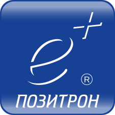
ПОЗИТРОН ГМБХDevelopment, manufacture, supply and service of radiation control and monitoring equipment for science, industry and the environment 1991-2026Zhovti Vody, UkraineDevelopment, manufacture, supply and service of radiation control and monitoring equipment for science, industry and the environment 1991-2026
Zhovti Vody, Ukraine
From a single detection unit
to a radiation monitoring system.
Thank you for your interest in our company’s products.
Radiation monitoring requires accurate measurements, reliable equipment and careful attention to operating conditions. We therefore need to understand your task: what must be monitored, where the instrument will operate and how it should interact with other systems.
Позитрон ГМБХ brings together experience in the design, manufacture and servicing of radiation monitoring instruments. We aim to help customers select suitable solutions and maintain constructive cooperation at every stage, from discussing technical requirements to operating the equipment.
I invite you to explore our catalogue and contact our specialists. We would be pleased to discuss your requirements and opportunities for cooperation.
Yours sincerely,
Oleh Mykolaiovych Brazhii
Industry guide: energy, technologies and radiation monitoring. Sources checked on 11 October 2026; linked statistics are updated by their publishers.
The nuclear sector covers electricity generation, research, equipment manufacturing, plant servicing and radioactive waste management. Power reactors and research reactors serve different purposes and should not be combined in a single count.
Compare countries by installed capacity, actual generation, fleet age and lifecycle status as well as unit numbers. The IAEA PRIS database distinguishes operating, under-construction and permanently shut-down power reactors.
Monitoring tasks include workplace, personnel, vehicle and cargo dose or contamination checks, environmental monitoring, maintenance and decommissioning surveys. Instrument selection depends on the quantity measured, range, operating conditions and customer requirements.
Energoatom’s fleet comprises the Zaporizhzhia, Rivne, South Ukraine and Khmelnytskyi sites. The operator lists 15 units: thirteen VVER-1000 and two VVER-440, with 13,835 MW installed capacity. This describes the fleet, not the number generating simultaneously.
The sector also includes repair, design and technical organisations, spent fuel storage and waste management. Radiation monitoring, metrology and instrument servicing support these activities.
Check actual plant conditions, especially at Zaporizhzhia, against current operator and IAEA updates. An investment programme, site preparation and reactor construction are different statuses; an announced project is not commissioned capacity.
| Type / family | Basic principle |
|---|---|
| PWR / VVER | Pressurised water transfers heat to the steam circuit through a steam generator. |
| BWR | Water boils in the reactor; steam flows to the turbine. |
| PHWR / CANDU | Heavy-water moderation; typically a pressure-tube design. |
| Gas-cooled / HTGR | Gas coolant; high-temperature projects can also target industrial heat. |
| Fast reactors | Fast-neutron operation with different coolant options. |
| SMR | Small modular reactors describe a size and modularity approach, not a single reactor physics type. |
Schedules and procedures depend on the jurisdiction and project. Preparatory work does not itself mean PRIS under-construction status. SMRs do not automatically guarantee lower costs or shorter schedules. Consult the official registry for current construction locations.
Open-source review as of 11 October 2026. This is an analytical reference, not a complete equipment inventory for every plant. Manufacturer, contractual supplier, integrator and operator may differ. Confirmed use is distinguished from catalogue capabilities.
| Function | Measurements and capabilities |
|---|---|
| Areas and buildings | Fixed gamma stations measure dose rate, generate warnings and time series. Weather data help interpret contamination transport. Gamma background alone does not establish alpha/beta contamination or radionuclide composition. [15] [17] |
| Air and effluents | Separate channels monitor aerosols, radioactive gases, iodine and liquids. Sampling, air flow and measurement methods determine results; dose rate cannot substitute for activity in Bq/m³. [15] [12] |
| Personnel and surfaces | Individual dosimeters record personal exposure; alpha/beta radiometers check skin and work clothing. These are different measurement tasks. [16] [10] |
| Laboratories and mobile surveys | Sample spectrometry characterises radionuclides; handheld and vehicle systems survey areas. A dose-rate map is not automatically a surface-contamination map. [15] |
| Site | Public evidence | Model / supplier |
|---|---|---|
| Rivne NPP | The operator records commissioning of an automated radiological monitoring system in 2004. | The reviewed publication does not name models or a supplier. [5] |
| Khmelnytskyi NPP | The 5 February 2025 announcement describes upgraded area monitoring and plans for turbine-hall monitoring, special gas treatment and individual dosimetry. | Models and suppliers are not disclosed; the 2025 plan is not evidence that all work was completed. [2] |
| South Ukraine NPP | An August 2026 exercise used a mobile radiometric laboratory with radiation monitoring and a weather station. | Laboratory operator: Energoatom Emergency Technical Centre; models and manufacturer are not named. [3] |
| Zaporizhzhia NPP | Energoatom publishes dated radiation-background reports. | These reports do not establish the complete current equipment inventory or suppliers. [6] |
| Chornobyl NPP — decommissioning | In September 2025 the individual dosimetry laboratory received a modular OSL system for external exposure doses. | Manufacturer: Mirion Technologies; model and contractual supplier are not identified. [4] |
| Type / model | Capabilities | Manufacturer / evidence status |
|---|---|---|
| АМП-12 «Пульс-1А» | Multi-channel pulse and analogue acquisition; up to 60 pulse channels, 0.01–6×10⁴ s⁻¹. Intended for automated monitoring and upgrades of АКРБ-03/06/08. | Позитрон ГМБХ. Catalogue designation: normal operation systems; no particular plant installation established here. [7] |
| БДМГ-04 / МКС-2001 | Fixed gamma dose-rate measurement; МКС-2001 uses interchangeable detection units. Range and measurand depend on the version. | Позитрон ГМБХ. Manufacturer catalogue confirmed; supply configuration needs separate verification. [8] [9] |
| РЗБА-04-04М | Skin and clothing alpha/beta contamination monitoring with threshold alarms; version 40 covers 18 areas using beta channels. | Позитрон ГМБХ. Purpose and versions confirmed by the catalogue. [10] |
| ПК АСКРО; УДАБ-01, УДЖГ-01/14РМ1/03; РПН-01, РПС-01/02, РАС-02/03, РГС-01; СВТ-01М; ДКГ-01, ДКН-01 | Monitoring posts, detection units, radiometers, ventilation-stack release-activity measurement stands and dosimeters. | Atomenergomash, Energoatom branch. Official product list; detailed specifications and allocation by plant are not provided. [1] |
| RAMSYS: GIM 206K; BIM 201K; NIM 201K | Respectively: accident-condition gamma dose rate; gaseous-effluent beta activity; neutron equivalent dose rate. | Mirion Technologies. International catalogue capabilities; installation of these models at specific Ukrainian NPPs is not confirmed by this review. [11] [12] [13] |
| RadMonitor / БДБГ-09 | Continuous automated gamma-background monitoring, displays and software. | ECOTEST. Catalogue solution; supply to a specific Ukrainian NPP is not confirmed here. [14] |
PROZORRO · OPEN DATA
Search Prozorro procurements and compare their metadata with our catalogue. Procurement text remains in Ukrainian.
38341200-9 — dosimeters; 38341000-7: radiation measuring apparatus; 50411000-9: measuring instrument repairs; 50433000-9: calibration. Combine service codes with radiation keywords.
Select a group and run the search. Empty keywords use the preset dictionary; manual queries (up to eight, separated by semicolons) override it. Sector presets fill an editable buyer-name list, not an official industry classification. Use verified EDRPOU identifiers for exact selection. Start without a CPV restriction: buyers may assign different codes. Spectrometers and radiometers can also be optical instruments; check the radiation type in the documents.
Coverage: loaded search pages; the full register has not been checked.
Source: official Prozorro open data · API ↗
Documents are available in each card. Read PDF/DOCX and scans with the button; a specialist must verify OCR and technical suitability.
Radiometers, dose meters, detection units and auxiliary systems. Product details describe their purpose and available configurations.
Specifications are based on the 2024–2025 catalogue. The configuration, scope of supply and current parameters are confirmed when ordering.
The old website texts are retained in full. Dates, specifications, certificates, names and company details reflect the source edition; information for 2026 should be confirmed with the company.
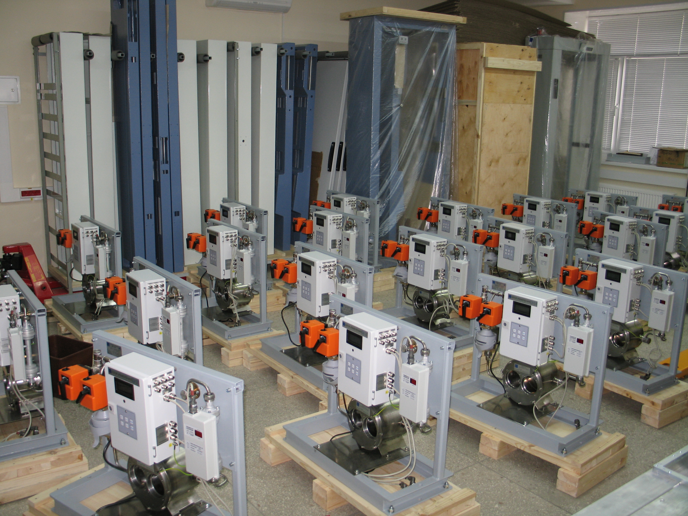
The products of «Позитрон ГМБХ» LLC meet the requirements of the technical regulation of legally regulated measuring equipment, which is confirmed by the type inspection certificate issued by the national scientific center «Institute of Metrology».
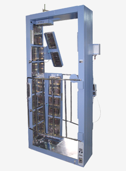
Radiometer
RZBA-04-04М
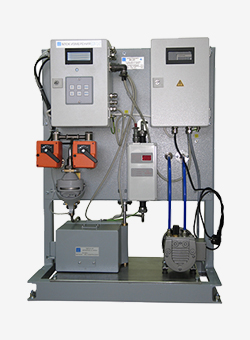
Dosimeter-radiometer
MKS-2001
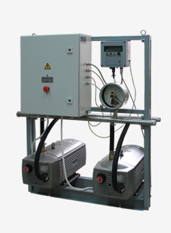
Pump block
BN-01
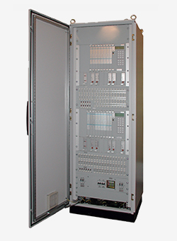
Analyzer
AMP-12 «Puls-1A»
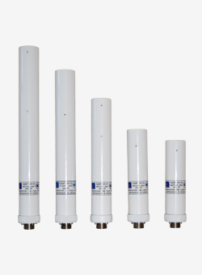
Detection units
BDMG-04
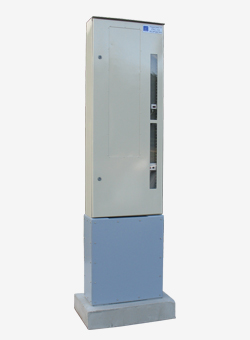
Radiometer
RKS-02 «Kordon»
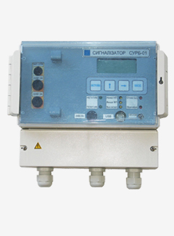
Signaling device
SURB-01
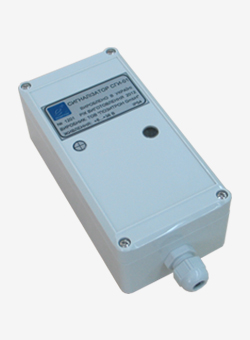
Signaling device
SGI-01
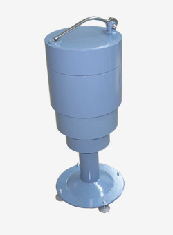
Radiometer
RUG-2001
Source: positron.dp.ua ↗
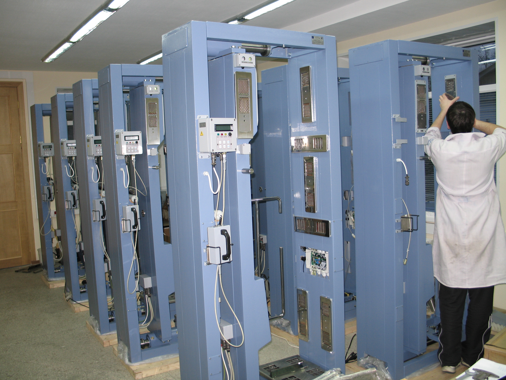
Brief information:
Radiometer surface contamination of alpha-and beta-active substances RZBA-04-04M (the radiometer) is designed to measure contamination of surfaces (skin or clothing of staff) of beta-and alpha-active substances (in flux density of alpha and beta particles incident the input window of detection units) and signaling of excess (or exceeded) established thresholds.
Special placement of stationary detection units BDZB on the body of the radiometer allows for simultaneous measurement of 18 areas of surface contamination of the garment (or skin) of the human beta-active substances. Measurement of all the other sites provide remote detection unit BDZB (for measuring contamination by beta-active substances) and the remote detection unit BDZA (for measurement of alpha-active substances).
Radiometer RZBA-04-04M relates to measuring devices with a threshold device in which sound and light alarm is triggered when the preset threshold is exceeded the level of contamination by beta-and alpha-active substances.
Radiometer RZBA-04-04M produces a signal "CLEAN" and unlocks the device prohibition output, if any of the stationary channel was not exceeding the level of contamination by beta - the active substances over a given threshold.
Radiometer RZBA-04-04M produces a signal "DIRTY" in the event of excess pollution beta - active substances over a given threshold for at least one stationary channel.
Radiometer RZBA-04-04M has the ability to connect to a local area network (LAN) through an interface RS485 (or optional, RS232).
Detection units BDZB and BDZA provide flow transformation of beta-and alpha-particles, respectively, statistically distributed in a sequence of voltage pulses, whose frequency depends on the particle flux density.
Measuring units UAK-07 and BOI-04 provide analysis and mathematical treatment of the flow of electrical impulses coming from the detection units, the issuance of signals exceeding or not exceeding a certain threshold (using indicators "CONTROL", "CLEAN" and "DIRTY") and an indication of numerical measurement results.
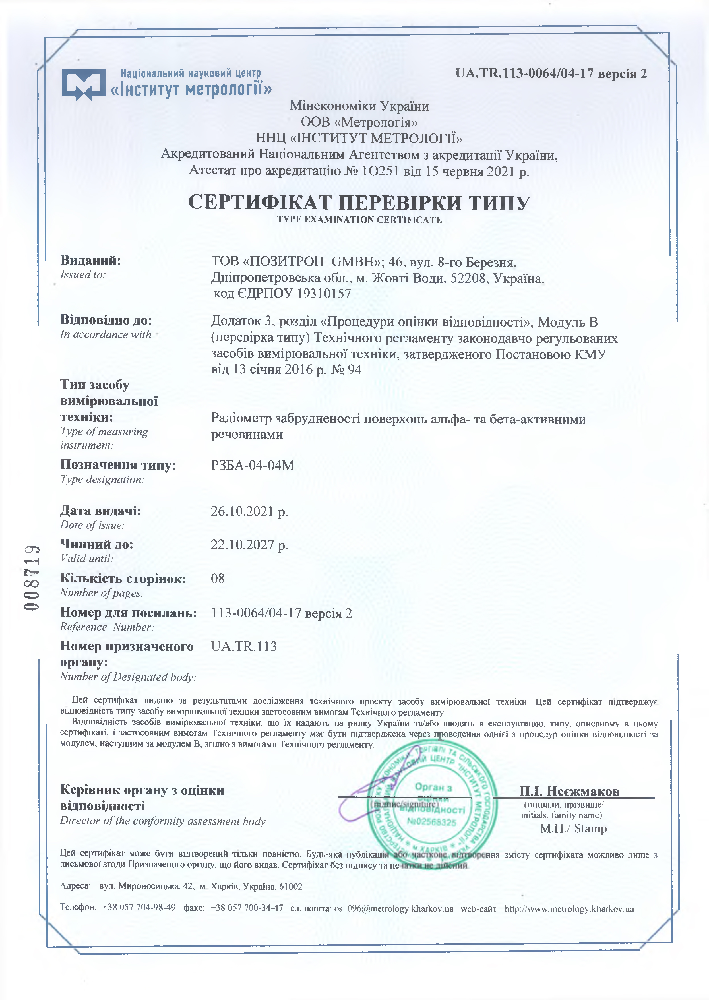
Radiometer surface contamination of alpha-and beta-active substances RZBA-04-04M has passed the state acceptance tests for assessing compliance with the technical regulations of legally regulated measuring equipment approved by Resolution of the Cabinet of Ministers of Ukraine №94 dated 13.01.2016, has a type inspection certificate. Reference number 113-0064/04-17 version 2 dated 10.26.21. Number of designated body: UA.TR.113.
| Options | Values |
|---|---|
| The range of flux density measurement of beta particles, from the surface, min-1 ∙ cm-2; in the energy range of beta particles, MeV |
from 5 to 15000 from 0,15 to 2,5 |
| Maximum permissible relative error in measuring the density of beta-particles flux at P = 0.95 does not exceed, % | ± 30 |
| Measuring range of flux density of alpha particles from the surface, min-1 ∙ cm-2; in the energy range of alpha particles, MeV |
from 0,1 to 10000 from 4,13 to 5,6 |
| Maximum permissible relative error of measurement radiometer flux density of alpha particles from the surface at P = 0.95 does not exceed, % | ± 30 |
| The sensitivity of detection units BDZB to beta radiation from sources such as working standard of CO with radionuclides 90Sr+90Y no less, (imp/s)/(min-1∙cm-2): - for channels №1¸13, 16-19; - for channels №14 и №15 |
0.5 0.3 |
| The sensitivity of the detection unit BDZA to alpha radiation from sources such as impact reference P9 with radionuclide 239Pu no less, (imp/s)/(min-1∙сm-2) | 0,2 |
| The sensitivity of the detection unit BDZA to alpha radiation from sources such as impact reference U8 with radionuclide 238U no less, (imp/s)/(min-1∙сm-2) | 0,08 |
| The sensitivity of the detection unit BDZA to alpha radiation from sources such as impact reference U4 with radionuclide 234U no less, (imp/s)/(min-1∙сm-2) | 0,04 |
| Thresholds alarms are set individually for each measuring channel, min--1∙сm-2: - for the detection unit BDZA within the limits - for the detection unit BDZB within the limits |
from 0,1 to 9999 from 5 to 9999 |
| Setting resolution thresholds, min-1∙cm-2: - at threshold levels of less than 5 min-1∙cm-2 - at threshold levels of more than 5 min-1∙cm-2 |
0,1 1 |
| Time of continuous work, hours per day | no limit |
| Operation mode setup time by no more, min | 2 |
| The instability of the radiometer readings for continuous operation 24 hours max, % | 5 |
| Power consumption in view of the power consumed by the analyzer connected to the units and devices detect no more, AB | 150 |
| MTBF, hours | 10000 |
| Average lifetime no less, years | 10 |
Radiometer surface contamination of alpha-and beta-active substances RZBA-04-04M manufactured in various designs. Depending on the modification of the radiometer can have:
• different number of channels and, accordingly, the total area of different detection units; • optional external probes to measure the contamination of surface alpha-and beta-active nuclides that are connected to an autonomous unit of measurement; • stationary detection units for the control of the back of the palms; • mobile detection unit for measuring the contamination of the upper part of head; • embedded industrial computer; • one or two disciplinary barrier to the passage of personnel.Is a rack with 18 stationary detection unit (hereinafter DU) BDZB and unit of measurement UAK-07 (located inside the installation). Basic version is equipped with a indicating unit BIC-03, which is shown as a symbolic circuit human figure is intended to indicate the pollution in each of the 18 fixed channels. Modification 20 has a display and keyboard unit BIC-02, by which we can derive the numerical results of measurements on each of the 18 stationary channels, as well as the trimming of radiometer. Basic version is equipped with a of radiometer DU for monitoring top of the head, placed on a movable axis. Position of DU for monitoring top of the head is regulated depending on the growth of human. Also present are stationary DU for monitoring back of the hand
The base model is equipped with remote DU BDZB for monitoring the "blind spots" in beta contamination. Also in the base model has remote DU BDZA for monitoring sites of the human body by alpha contamination. The measurements results for each of the remote channel is processed and displayed on the LCD display of measurement unit BOI-04. In case of excess contamination above the established threshold for block BOI-04 red LED "DIRTY" lights up and the audio alarm. In other case of green LED "CLEAN" lights up. Modification 20 has two disciplinary barrier for the passage of personnel. Modification 40 distinguished by the presence of only one disciplinary barrier.
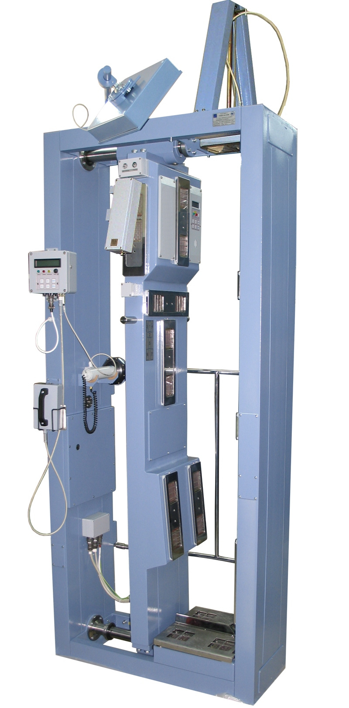
Radiometer RZBA-04-04M modification of 20.01 and 40.01 are the analogues 20 and 40, respectively, modifications except for one difference. Indication unit BIC-03 is replaced by remote industrial computer. Modification of 20.01 has two disciplinary barrier for the personnel. Modification 40.01 characterized by the presence of only one disciplinary barrier.
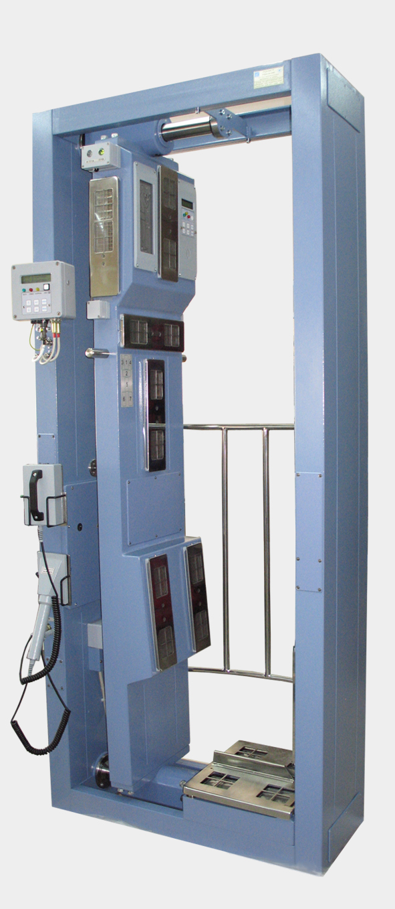
Rack with 15 stationary detection unit BDZB and unit of measurement UAK-07 (located inside the installation). Unlike the base model, no stationary detection units for monitoring the top of the head and back of the hand. Modification 21 has two disciplinary barriers, and the modification 41 has only one.
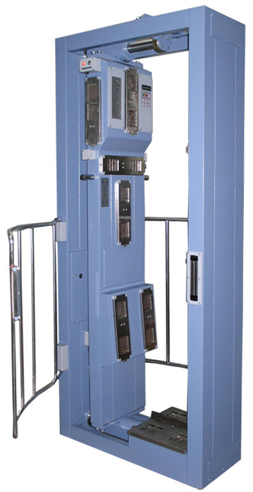
Rack with 15 stationary detection unit BDZB and unit of measurement UAK-07 (located inside the installation). Unlike the base model, no: stationary detection units for monitoring the top of the head and back of the hand; remote probes for monitoring the "blind" spots in beta-contamination; remote unit for monitoring parts of the body for alpha contamination; block BOI-04. Modification 22 has two disciplinary barriers, and the modification 42 has only one.
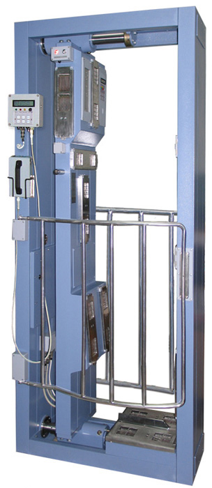
Rack with 15 stationary detection unit BDZB and unit of measurement UAK-07 (located inside the installation). Unlike the base model, no: stationary detection units for monitoring the top of the head and back of the hand; remote unit for monitoring parts of the body for alpha contamination. Modification 24 has two disciplinary barriers, and the modification 44 has only one.
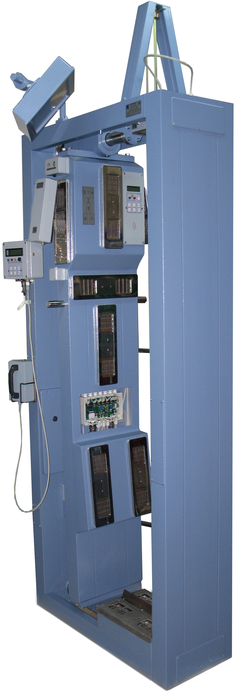
Rack with 18 stationary detection unit BDZB and unit of measurement UAK-07 (located inside the installation). Unlike the base model, no remote unit for monitoring parts of the body for alpha contamination. All other nodes are similar to the basic model. Modification 28 has two disciplinary barriers, and the modification 48 has only one.
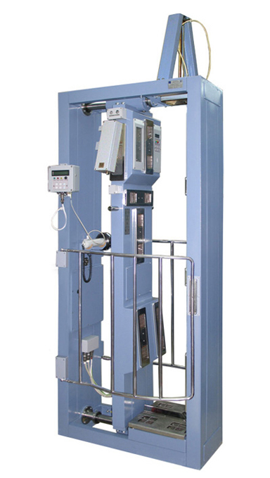
Rack with 18 stationary detection unit BDZB and unit of measurement UAK-07 (located inside the installation). Unlike the base model, no remote probes for monitoring the "blind" spots in beta-contamination. All other nodes are similar to the basic model. Modification 29 has two disciplinary barriers, and the modification 49 has only one.
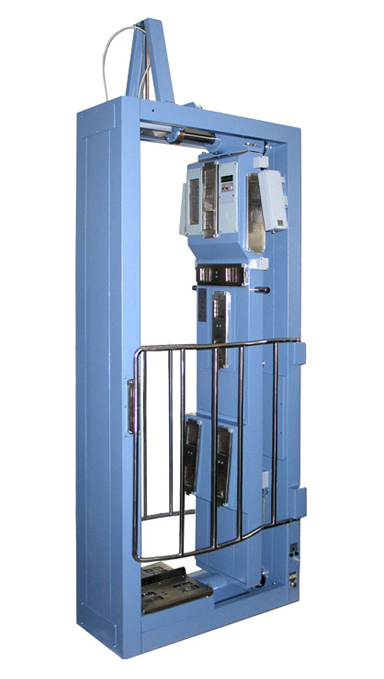
Rack with 18 stationary detection unit BDZB and unit of measurement UAK-07 (located inside the installation). Unlike the base model, no: remote DU for monitoring the "blind" spots in beta-contamination; remote unit for monitoring parts of the body for alpha contamination; block BOI-04. All other nodes are similar to the basic model. modification 32 has two disciplinary barriers, and the modification 52 has only one.
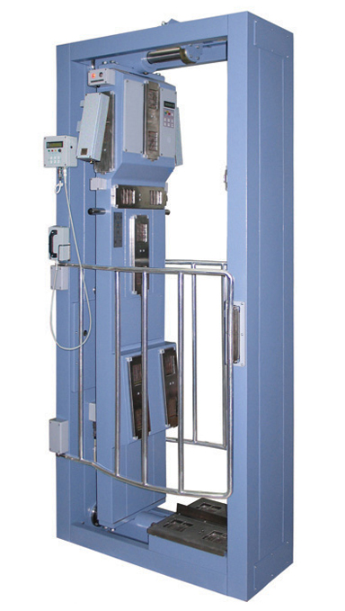
Rack with 17 stationary detection unit BDZB and unit of measurement UAK-07 (located inside the installation). Unlike the base model, no: stationary detection units for monitoring the top of the head; remote DU for monitoring parts of the body for alpha contamination. All other nodes are similar to the basic model. modification 35 has two disciplinary barriers, and the modification 55 has only one.
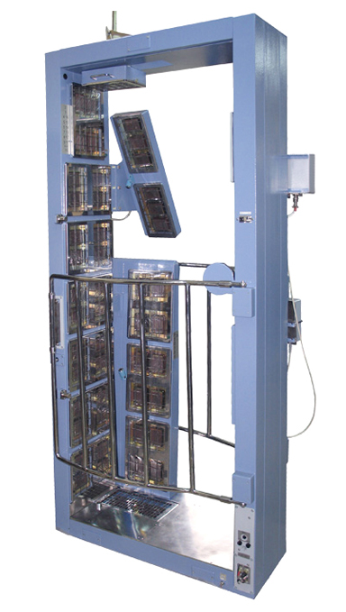
Radiometer RZBA-04-04M modification 68 controls contamination of surfaces of 26 parts of the body by 26 stationary units, each with a separate measuring channel. The radiometer is a stationary device, consisting of:
- rack with 26 stationary detection unit BDZB (BDZB-15 and BDZB-16) and unit of measurement UAK-07 (which is located inside the rack of radiometer);
- remote detection unit BDZB (BDZB-05) for measuring the level of contamination by beta-active substances in any part of the body surface;
- remote detection unit for measuring BDZA pollution levels of alpha-active substances in any part of the body surface;
- measurement unit BOI-04, which processes and displays the results of measurements from the remote units and BDZB BDZA on LCD;
- two doors with electromagnetic locks, which prevents the possibility of passing of personnel without any control.
Radiometer provides audible and visual alarm. The thresholds alarms are set separately for each channel.
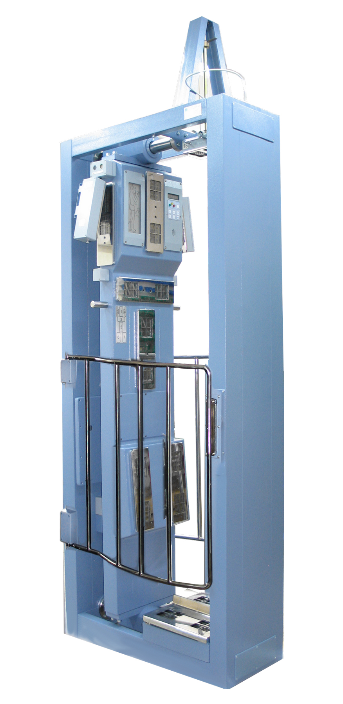
Radiometer RZBA-04-04M Modification 71, 72 allows simultaneous measurement of contamination of the surface of a person's clothing (or skin) with beta-active substances in 18 areas. Measurement of contamination with beta-active substances (as well as control of the level of gamma radiation) of small objects is provided by a separate detection unit. All detection units register a mixed flux of gamma and beta radiation and are calibrated by the flux density of beta particles from the surface upon delivery. In executions 71 and 72, the alpha channel (DB for registration of alpha-active substances) is absent. In version 71, there is one door (exit) for the passage of personnel. The radiometer version 72 has two doors. The radiometer produces a "dirty" signal if the measured level of surface contamination on one or more measuring channels exceeds the set limit value. The radiometer produces a "CLEAN" signal and disables the exit door lock if the measured level of contamination of surfaces on all measuring channels does not exceed the set limit value.
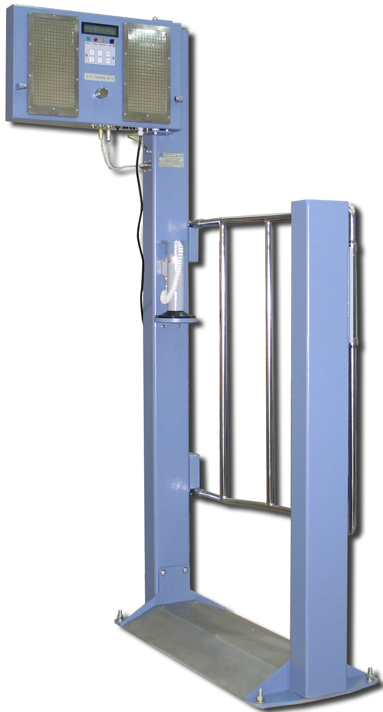
Permanent installation of pollution control arms and control sections of the human body for beta contamination. The radiometer is equipped with two fixed detection unit and the remote unit BDZB BDZB and measurement unit VAR-07 to output the results of measurements and display of exceeding or not exceeding the thresholds of contamination. Radiometer equipped with a device for mounting on a wall. The differences from the base case: the number of fixed detection units BDZB reduced to two, there is no remote detection unit for monitoring areas of the human body for alpha contamination.
Is a separate remote for monitoring unit BDZB sections of the human body for beta contamination. The measurement results are displayed on the unit of measurement BOI-04, functions of radiometer the same as a remote detection unit BDZB on the base model of radiometer. The radiometer is equipped with a device for mounting on the wall. Unlike the basic model: there are no stationary detection units and remote detection unit for alpha contamination.
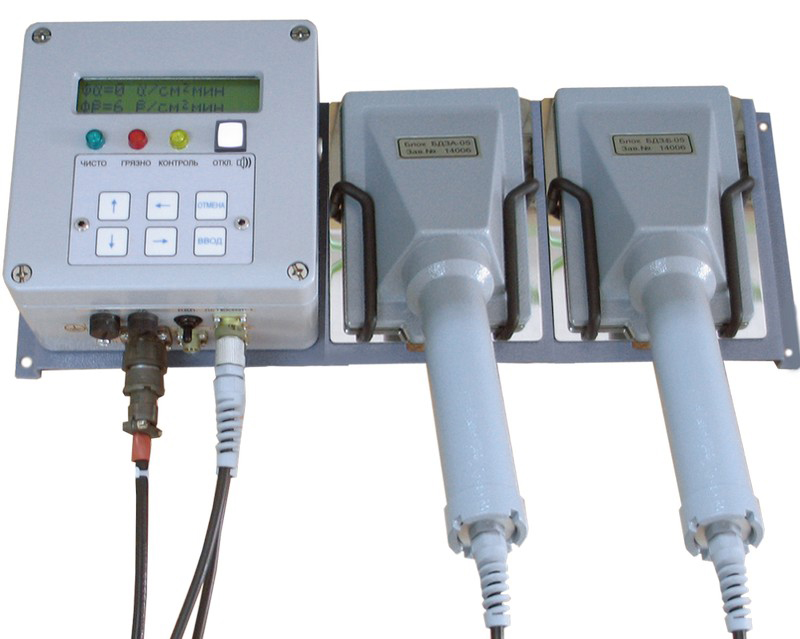
Consists of two remote detection unit BDZB and BDZA for monitoring sites of the human body by beta-and alpha-contamination. he measurement results are displayed on the unit of measurement BOI-04, functions of radiometer the same as a remote detection unit BDZB on the base model of radiometer. The radiometer is equipped with a device for mounting on the wall. Unlike the basic model: there are no stationary detection units.
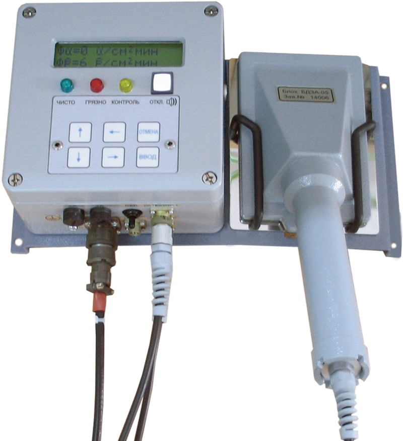
The modification 10 is a separate remote unit BDZA for monitoring sections of a human body on an alpha-pollution. The results of measuring has deduced on the processing block of the information BOI-04. The functions of the monitor are analogous to functions of the remote detection unit BDZA on base model of the monitor. The monitor is equipped with adaptation for fastening on a wall. There are not the stationary detection units and the remote detection unit on a beta-pollution.
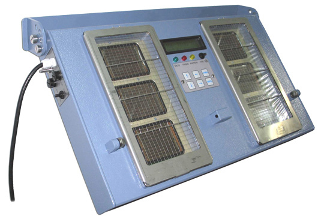
It is the stationary plant for monitoring impurity of arms. The monitor is equipped with two stationary detection units BDZB and the processing block of the information BOI-04 for an output of observed data and indications of overflow fixed threshold value of pollution. The radiation monitor is equipped with adaptation for fastening on a wall. There are not 16 stationary detection units BDZB, the remote detection units for monitoring sections of a human body on an alpha- and a beta-pollution.
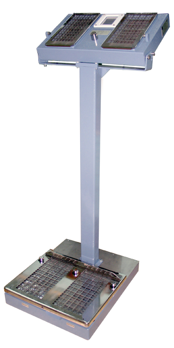
Permanent installation to control contamination of hands and feet on the alpha and beta contamination. The radiometer is equipped with two stationary detection units BDZB and measurement unit VAR-07 to output the results of measurements and display of exceeding or not exceeding the thresholds of contamination. The differences from the base case: the number of fixed detection units BDZB reduced to four, no remote detection unit for monitoring areas of the human body on alpha and beta contamination.
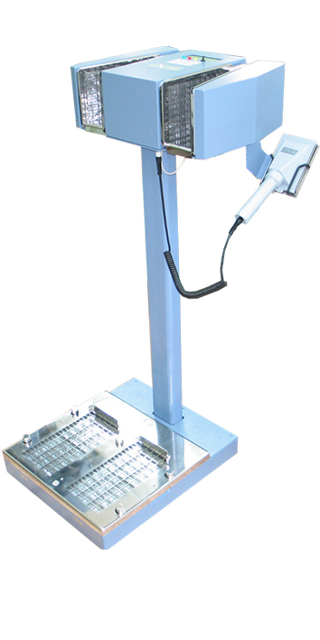
Radiometer RZBA-04-04M 16.01 modification is designed to measure the level of contamination of personnel clothing, hands and shoes beta-active substances (flux density of beta particles incident on the entrance window of detection units) and alarm about excess (or exceeds) the set threshold levels.
Placing stationary detection units on the body radiometer allows simultaneous measurement of surface contamination by beta-active substances in 6 sections:
• the palm of the left hand;
• Back of the left hand;
• the palm of the right hand
• Back of the right hand;
• the foot of the left and right leg;
To measure contamination by beta-active substances other parts of the body (or clothes) in an additional channel radiometer with remote detection unit.
Radiometer RZBA-04-04M 16.02 modification is designed to measure the level of contamination of personnel clothing, hands and shoes alpha and beta-active substances (flux density of alpha and beta particles incident on the entrance window of detection units) and alarm about excess (or exceeds) the set threshold levels.
Placing stationary detection units on the body radiometer allows simultaneous measurement of surface contamination by beta-active substances in 6 sections:
• the palm of the left hand;
• Back of the left hand;
• the palm of the right hand
• Back of the right hand;
• the foot of the left and right leg;
To measure contamination by alpha-active substances other parts of the body (or clothes) in an additional channel radiometer with remote detection unit.
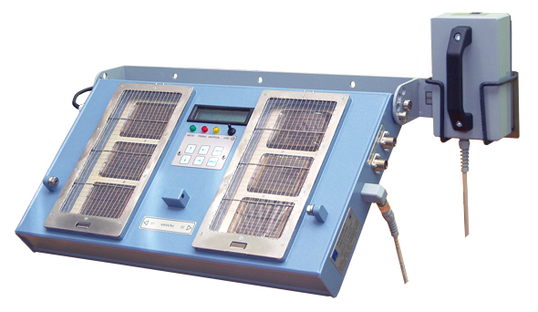
Stationary installation for pollution control of hands and sites of the human body for beta contamination. The radiometer is equipped with two stationary detection unit BDZB and remote unit BDZB and unit of measurement UAK-07 for output and display of measurement results exceeded or not exceeded the established threshold of contamination. The radiometer is equipped with a device for mounting on the wall. Differences from basic variant: number of stationary detection units BDZB reduced to two, there is no remote detection unit for monitoring sites of the human body for alpha contamination.
Source: positron.dp.ua ↗
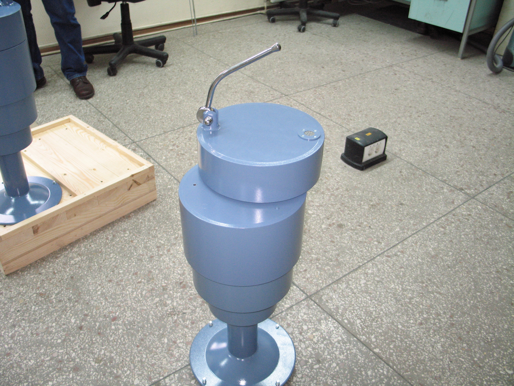
Brief information:
Radiometer specific activity RUG-2001 (hereinafter radiometer) is designed for rapid determination of the specific activity of natural radionuclides 232Th, 226Ra, 40K and man-made radionuclides 60Co, 137Cs in samples taken for chemical analysis of ladle metallurgy industries. The radiometer is used in laboratories radiological control metallurgical plants.
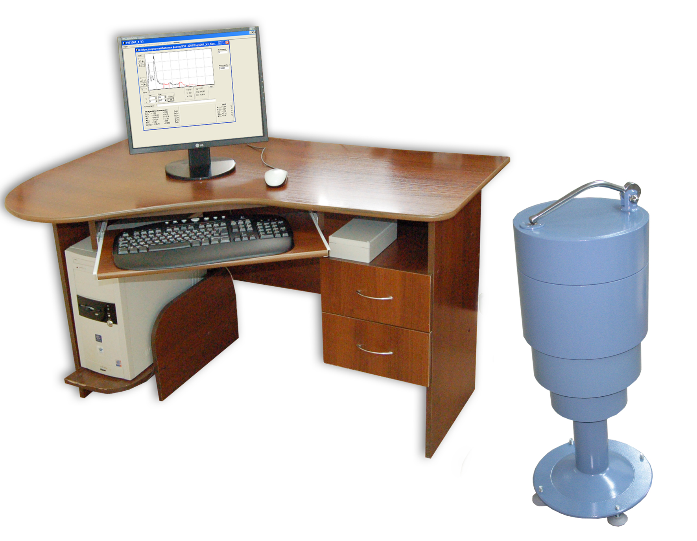
The basis of the radiometer put gamma-spectrometric method for the determination of radionuclides, based on measurements of the pulse height distribution of radionuclides in the study of recorded energy ranges.
Radiometer is a stationary device, consisting of the following units:
• Lead defense (1 pc. single-channel radiometer, 2 pcs. radiometer for two-channel); • detection unit BDEG-01D (1 pc. single-channel radiometer, 2 pcs. for dual channel radiometer); • Amplitude conversion block BPA-01D (depending on order, available as part of a personal computer or in a separate building); • personal computerProtecting a lead is protected from the influence of the surrounding natural background in the measurement process.
The detection unit converts the stream of gamma radiation in a sequence of pulses corresponding amplitudes. At the end of the detection unit is well to place the sample analyzed.
Block-01D converter converts the amplitude of pulses from the detecting unit into digital code and transmits them to the PC. The transducer block has two independent processing channels, it simultaneously be two detection unit. Depending on the order, the payment of the transducer block BPA-01D is set in a free PCI-slot of a personal computer or in a separate enclosure. Exchange of information via COM-port.
| Options | Values |
|---|---|
| Range radiometer measurements of the specific activity, Bq / kg | from 20 to 10000 |
| Recorded radionuclides | 232Th, 226Ra, 40K 60Co, 137Cs |
| Maximum permissible relative error of measurement of the specific activity at a confidence level of 0.95%, max % | ± 30 |
| Minimum measured 137Cs activity during the measurement 60 min (background radiation 0.15 mSv / h) at P = 0,95, d = 50%, not more Bq | 4 |
| The instability of the calibration characteristics conversion for 8 hours max, % | ± 1 |
| The instability of the counting characteristics for 8 hours max, % | ± 5 |
| Warm-up time radiometer no more mines | 30 |
| Continuous operation time radiometer, hours | 8 |
| The values of the measurement time set in the range minutes | from 10 to 60 |
| Operating conditions | |
|---|---|
| Ambient temperature, °С | from 10 to 35 |
| Relative humidity (at +30 °C), % | 75 |
| Barometric pressure, kPa | from 84 to 106,7 |
Source: positron.dp.ua ↗

Brief information
Radiometer neutron and gamma radiation RKS-02 «Kordon» (hereinafter Radiometer) is used to:
- rapidly detect authorized and unauthorized export and import of neutron and gamma radiation sources or radioactive contaminated vehicles or cargo;
- to control unauthorized bring in (import) sources of radiation (or radioactive contaminated materials) during the passage through control area of personnel at the entrance (or exit) on the territory of industrial sites and objects of national importance, etc.
The radiometer is a stationary device, consisting of detection units and measurement unit with a built-in power supply.
Detection units convert the total flux of neutrons and gamma rays in a sequence of pulses at the output. The principle of the detector modules based on scintillation in plastic scintillator. As the detector uses a plastic scintill ator which is sensitive to gamma and neutron radiation. The count rate of the output pulse train is proportional to the density of the total flux of gamma rays and neutrons at the location of the detection unit.
Typical location of the radiometer for example, modifications to road transport:
• Diagram of a typical radiometer location; • Control of two lanes of vehicles (top view);Examples of radiometer RKS-02 «Kordon» installation at customer facilities:
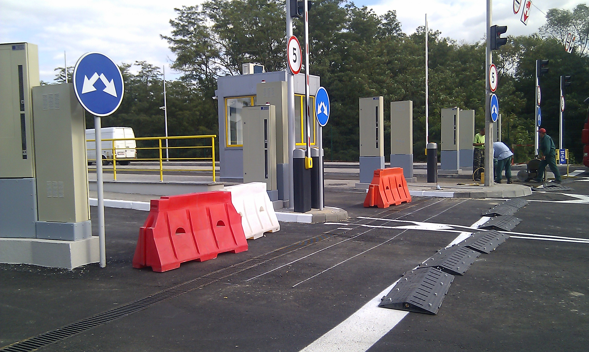
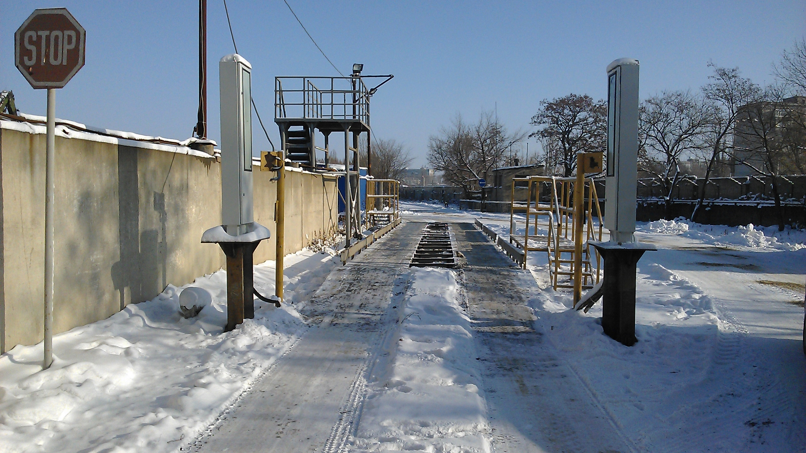
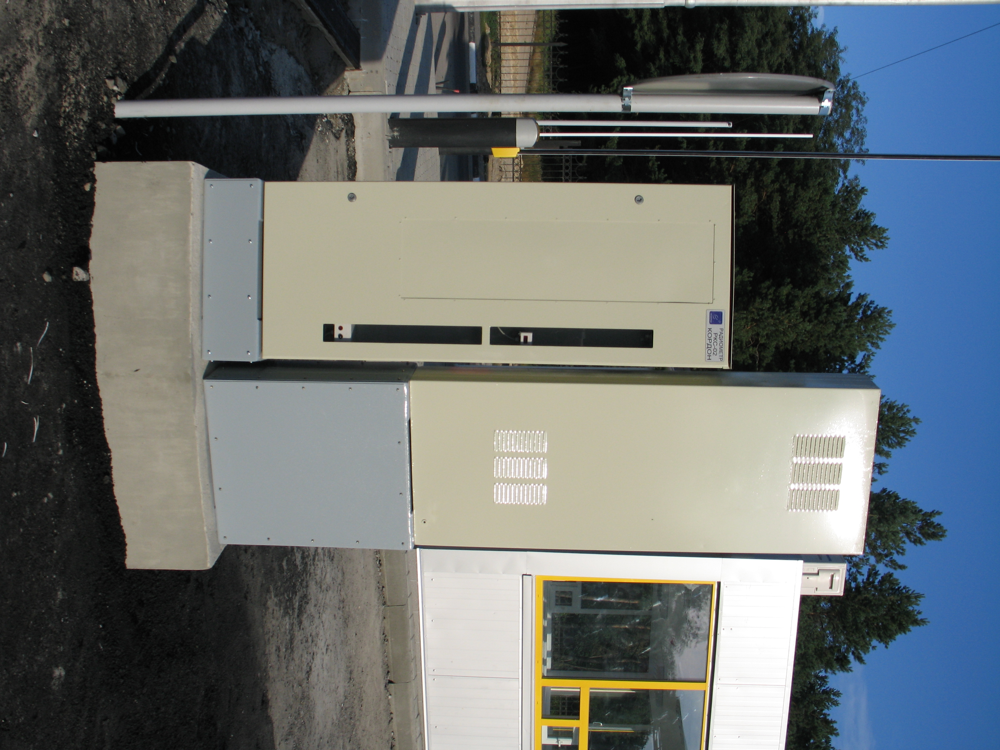
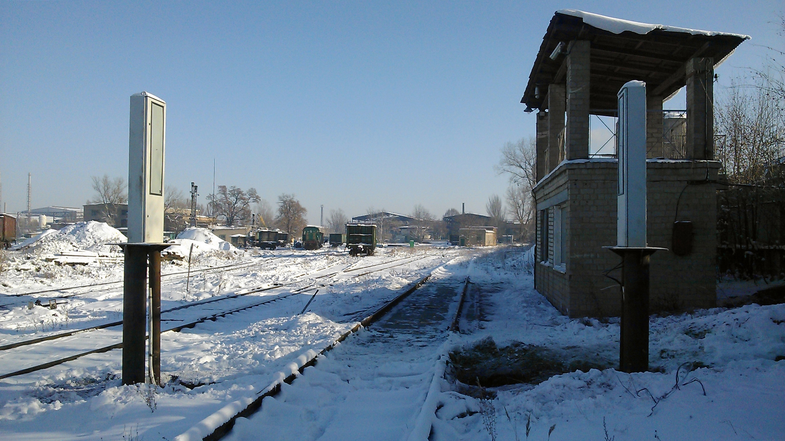
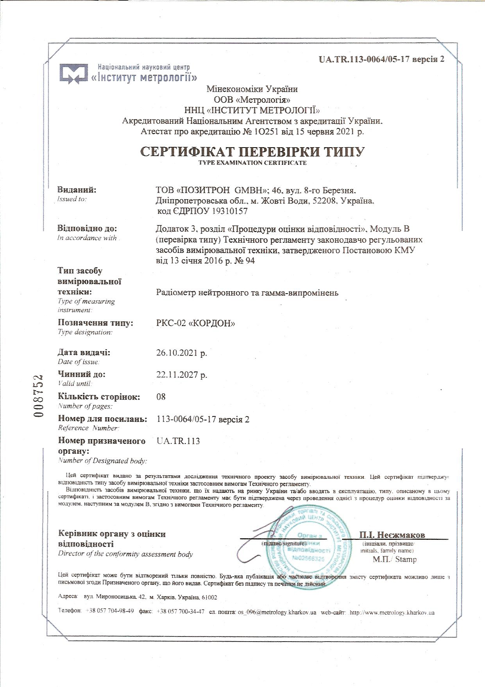
Radiometer of neutron and gamma radiation RKS-02 «Kordon» has passed the state acceptance tests for assessing compliance with the technical regulations of legally regulated measuring equipment approved by Resolution of the Cabinet of Ministers of Ukraine № 94 dated 13.01.2016, has a type inspection certificate No. UA.TR.113-0064/ 05-17 version 2 dated 10.26.21.
| Technical characteristics RKS-02 «Kordon» | |
|---|---|
| Options | Values |
| Energy range of gamma radiation, MeV | from 0,06 to 3 |
| Energy range of fast neutrons, MeV | from 0,2 to 10 |
| The range of measurements of neutron radiation flux density, min -1∙cm-2 | from 0,1 to 10 |
| Maximum permissible relative error of measurement of neutron radiation flux density at P = 0.95%, max, % | ±40 |
| The range of flux density measurement of gamma rays with energies of 660 keV, min-1cm-2 | from 0,5 to 50 |
| Maximum permissible relative error in measuring the density of the flux of gamma rays with energies of 660 keV at a confidence level of 0.95%, max, % | ±35 |
| Radiometer sensitivity to gamma rays with energies of 660 keV:
– a detection unit BDPS-03M at least, (imp/s)/(min-1∙cm-2) – a detection unit BDPS-06 at least, (imp/s)/(min-1∙cm-2) |
300 440 |
| The range of values of measurement time set in the limits, s | from 0,125 to 128 |
| Time of continuous work, h | 24 |
| The instability of the radiometer readings for continuous operation 24 hours max, % | 5 |
| Mean time between failures, h | 10000 |
| Average life radiometernot less, years | 10 |
| Detection unit BDPS-03M | ||||
|---|---|---|---|---|
| Type of radiation | Gamma radiation | Neutrons | ||
| Energy gamma rays, keV | 60 | 660 | 1250 | PuBe source |
| The detection efficiency, % | 15 | 100 | 80 | not less 400 |
| Detection unit BDPS-06 | ||||
| Type of radiation | Gamma radiation | Neutrons | ||
| Energy gamma rays, keV | 60 | 660 | 1250 | PuBe source |
| The detection efficiency, % | 15 | 100 | 80 | not less 500 |
| Terms of use | |
|---|---|
| Environment temperature, °С - for the detection units - for the measurement unit and power supply |
from -30 to +50 from +5 to +50 |
| Relative humidity (at +35 °C) not more, %
- for the detection units - for the measurement unit and power supply |
95 80 |
| Atmospheric pressure, kPa. | from 70 to 106 |
There are 3 versions of the radiometer RKS-02 «Kordon»:
• for control of rail transport; • for control of road transport; • for control of personnel, passengers and baggage.Radiometer for the control of transport is a stationary device, consisting of the following components:
• detection units (BDPS-03M or BDPS-06); • measurement unit UAK.Optionally, the composition includes a radiometer, depending on the conditions of supply:
• object presence sensor KBH-01PM with infrared emitter IKI-03M to generate a signal of the presence of an object in the controlled area. The principle of the sensor is based on the intersection of the object of the infrared beam; • siren BIC-09 to duplicate the sound and light alarm in the place of installation of detection units; • remote alarm unit BIC-12 to control the performance sirens BIC-09 and disable the sound when an alarm is triggered. Control of working capacity is provided when you click on the BIC-12. Turn off the alarm occurs with the toggle switch on the BIC-12; • two stands (primary and secondary) for attaching the detector units. Stands are installed on both sides along the route of control object. Inside each stand has one or two detection units, depending on delivery terms. In each of the stands with the detection unit mounted lead shields, which reduce the influence of natural background radiation from all directions except the direction to the object of control.Radiometer for monitoring of personnel is designed as a stationary radiometric gates consisting of two side stands (primary and secondary ), the lower and upper unit. Each side of the stands equiped by detection unit BDPS-06 with a length of 1,000 mm of scintillator.
The basic units of the radiometer::
• detection units BDPS-06 (from 2 to 4); • measurement unit UAK; • power supply; • object detection device (infrared emitter IKI-04, infrared receiver IKP-03 and two units PBU-01); • blitz-lamp BIC-07; • cross card PKC-19Source: positron.dp.ua ↗
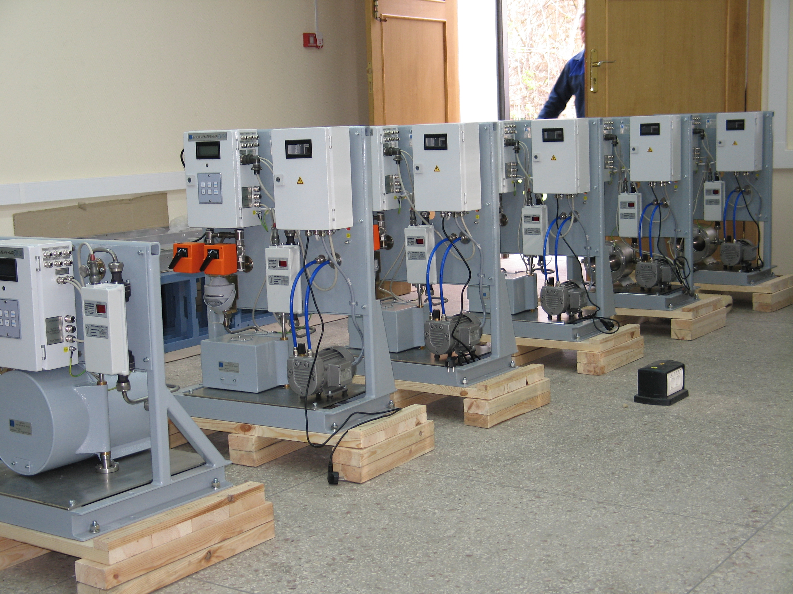
Brief information:
Dosimeter-radiometer MKS-2001 it is used for radiation monitoring in institutions where the works with radioactive materials and other radiation-dangerous sources of ionizing radiation.
Dosimeter-radiometer MKS-2001 is multifunctional stationary device with digital display readings, microprocessor control and the ability to connect exchangeable detection units (devices) BDMG-04, UDZhG-01, UDGB-01, BDMG-101, BDMN-100, shielded cable connected to the measurement unit BOI-12 or BOI-12-01. Alarm unit BIC-17 (supplied by customer request) is designed to duplicate the light and sound signals of the measured value exceeds the specified thresholds.
Detection unit (device) converts the measured physical quantity into a sequence of pulses at the output. The signals from the unit (device) detection to the input unit of measurement, where they are processed.
Dosimeter-radiometer provides a setting of two thresholds of the alarm - a warning threshold and an emergency threshold. Threshold alarm is indicated by elements of light and sound alarm. Light and sound alarm threshold is made to display the elements of green, yellow, red and sound alarm installed on the unit of measurement BOI-12.
Depending on the factors set the settings, if the threshold is exceeded the audio alarm. Every fact trigger threshold alarms recorded in the log. When you turn on dosimeter-radiometer automatically identifies the type of the connected detection unit (device).
During operation, the dosimeter-radiometer provides automatic switching of the measurement range for detection units with switching of ranges and accumulation of measured values in the memory (log of measured values) with the frequency set in the setting parameters.
Unit of measurement BOI-12 is designed for:
• counting of electrical impulses coming from the detection unit is connected; • determine the average count rate of input pulses; • calculation of measurement results obtained on the basis of the average count rate of the pulse sequence input; • LCD output measurement results; • issue of light and sound signals in excess of specified thresholds (warning and emergency); • supplying power to the detection unit; • recording and storing data in the logs; • transmitting and receiving information via RS-232 and RS-485.The MKS-2001 dosimeter-radiometer has passed the state acceptance tests for assessing compliance with the technical regulations of legally regulated measuring equipment approved by Resolution of the Cabinet of Ministers of Ukraine №94 dated 13.01.2016, has a type inspection certificate № UA.TR.113-0064/03-17 version 2 dated 24.12.19.
| Options | Values |
|---|---|
| Power supply dosimeter-radiometer (for performances 01,02,05-09,20-26) by AC voltage, V frequency, Hz |
from 187 to 242 50 ± 1 |
| The nominal value of supply voltage (for performances 01,02,05-09,20-26), V | 220 |
| Dosimeter-radiometer (for performances 10,11,14-19) is powered from a DC source voltage, V | +12(±0,5) |
| Current consumption (for performances 10,11,14-19) at rated voltage of 12 V, mA | not more 100 |
| The power consumed by a dosimeter-radiometer, VA for models 20,21,24, VA |
not more 100 not more 160 |
| Operation mode setup time dosimeter-radiometer, min for the MKS-2001 modifications 02,05, 06, 07, 09, 11, 16, 17 for the MKS-2001 modifications 01, 08, 10, 14, 15, 18, 20, 21, 22, 23, 24, 25, 26 |
not more 10 not more 30 |
| Continuous operation time of the dosimeter-radiometer, hours a day | not less 24 |
| Instability of readings for continuous operational time 24 hours, % | not more 5 |
| Mean time to failure of the dosimeter-radiometer, h | not less 10000 |
| Average lifetime of the dosimeter-radiometer with the replacement of individual modules and components, worn out, years | not less 10 |
| Terms of use | |
|---|---|
| Environment temperature for BOI-12 and BIC-17, °С | from +5 to +50 |
| The rate of temperature change, °С/h | not more 5 |
| The upper value of relative humidity (at + 50 ºС), % imiting relative humidity (at +50 ºC) |
75 100 |
| Atmospheric pressure, kPa | from 54 to 540 |
When you connect the corresponding detection unit radiometer measures the equivalent dose rate of gamma radiation in areas with low (BDMG-04) and high (BDMG-101) dose rate, equivalent dose of neutron radiation (BDMN-100), volume activity of gamma-emitting nuclides in the liquid (UDZHG-01).
Dosimeter-radiometer MKS-2001 with the detection unit BDMG-101 is designed to measure the equivalent dose of gamma radiation in areas with a high dose.
| Technical specifications of the detection unit BDMG-101 | |
|---|---|
| Options | Values |
| Energy range of gamma radiation, MeV | from 0,05 to 3,0 |
| Measurement range of equivalent dose of gamma rays, mSv/h | from 3∙10-4 to 2∙102 |
| Maximum permissible relative error of measurement equivalent dose of gamma radiation at a confidence level of 0.95 max, % | ± 25 |
Changeing of sensivity of dosimeter-radiometer with detection unit BDMG-101 at a constant dose rate according to the detected radiation in the energy range from 0.05 to 1.25 MeV is not more 30 % from the value obtained from the working reference source of 137Cs
Dosimeter-radiometer MKS-2001 with the detection unit BDMN-100 designed to measure equivalent dose of neutron radiation
| Technical specifications of the detection unit BDMN-100 | |
|---|---|
| Options | Values |
| Energy range of neutron radiation, MeV | from 0,025 to 10,0 |
| Measurement range of equivalent neutron dose, mSv/h | from 0,1 to 100 |
| Maximum permissible relative error of measurement equivalent dose of neutron radiation at a confidence level of 0.95%, max | ± 25 |
Sensitivity to radiation detection unit Pu-Be source at least 0.45 imp/s at 1 μSv/h.
* - Modification 05 is composed of measurement unit BOI-12-01 for connection to an analyzer AMP-12 «Pulse-1A». Modification 11 and 16 is composed of measurement unit BOI-12-01 with +12 V power. Modification 11 is supplied without the cooler to the detection unit BDMN.
Dosimeter-radiometer MKS-2001 using the detection unit BDMG-04 is designed to measure the equivalent dose of gamma radiation measurements in a broad sense, from the background level.
| Technical specifications of the detection unit BDMG-04 | |
|---|---|
| Options | Values |
| Energy range of gamma radiation, MeV | from 0,05 to 3,0 |
| Measurement range of equivalent dose of gamma rays, Sv/ h | from 0,05 to 10 |
| The sensitivity of the detection unit in the calibration of an exemplary radionuclide 137Cs, not less than: - BDMG-04 (sensitive channel), s-1/(μSv ∙ h-1); - BDMG-04 (coarse channel), s-1/(μSv ∙ h-1); |
4,0 8,0 |
Energy dependence of the sensitivity of the detection unit BDMG-04 relative to the energy of 662 keV gamma-ray of a radionuclide 137Cs not more ± 25 %
* - Modification 07 is composed of unit measurement BOI-12-01;
* - Modification 09 is composed of "smart" detection unit BDMG-04;
* - Modification 17 is composed of measurement unit BOI-12-01 with +12 V power.
Dosimeter-radiometer MKS-2001 using the detection unit BDMG-04-02 is designed to measure the equivalent dose of gamma radiation.
| Technical specifications of the detection unit BDMG-04-02 | |
|---|---|
| Options | Values |
| Energy range of gamma radiation, MeV | from 0,05 to 3,0 |
| Measurement range of equivalent dose of gamma rays, Sv/h | from 0,04∙10-6 to 4∙10-3 |
Energy dependence of the sensitivity of the detection unit BDMG-04 relative to the energy of 662 keV gamma-ray of a radionuclide 137Cs not more ± 25 %.
Dosimeter-radiometer MKS-2001 (with detection device UDZhG-01-01) designed to measure the volume activity of radionuclides of gamma radiation in a liquid. The composition of UDZHG-01-01 includes detection unit BDPG-01 and a mounting kit. In UDZHG-01-01, unlike UDZHG-01 is used only main channel with detection unit BDPG-01. Compensation channel at UDZHG-01-01 is absent.
| Technical specifications of the detection unit UDZhG-01-01 | |
|---|---|
| Options | Values |
| Measurement range of radionuclides volume activity of gamma radiation in a liquid, Bq/m3 | from 2∙103 to 1∙108 |
| Maximum permissible relative error in measuring of volumetric activity gamma-ray radionuclide 137Cs in a liquid (at P = 0.95), % | 30 |
| Energy range of gamma radiation, MeV | from 0,1 to 3,0 |
| Sensitivity SV in measuring the volume activity of gamma-radiation of the radionuclide 137Cs in a liquid, m3 | from 1,26∙10-3 to 2,34∙10-3 |
| Sensitivity SТ when measuring the activity in the range of 103 Bq to 106 Bq working reference source type OSGI with a radionuclide 137Cs, located at a distance 0,12 m from the front of the detection unit | from 1,12∙10-2 to 2,08∙10-2 |
* The modification 10 differs from the modification 8 of the presence of RS485 interface.
Dosimeter-radiometer MKS-2001 (with the device detection UDZHG-01-02) designed to measure the volume activity of radionuclides of gamma radiation in a liquid. The composition of UDZHG-01-02 includes two detection unit BDPG-01 (primary and compensatory) in the lead shield. The basic detection unit BDPG-01 is installed in the measuring chamber. Dosimeter-radiometer MKS-2001 (hereinafter - the dosimeter-radiometer) is used to control the liquid process environments in the radiation safety control equipment at nuclear power plants (NPP). Dosimeter-radiometer can be used to replace the detection device UDZHG-04R when upgrading radiation control safety equipment.
| Technical specifications of the detection unit UDZhG-01-02 | |
|---|---|
| Options | Values |
| Measurement range of radionuclides volume activity of gamma radiation in a liquid, Bq/m3 | from 2,0∙104 to 1,0∙109 |
| Maximum permissible relative error in measuring of volumetric activity gamma-ray radionuclide 137Cs in a liquid (at P = 0.95), % | 35 |
| Energy range of gamma radiation, MeV | from 0,1 to 3,0 |
| Sensitivity SV in measuring the volume activity of gamma-radiation of the radionuclide 137Cs in a liquid, m3 | from 1,47∙10-4 to 2,74∙10-4 |
| Sensitivity SТ when measuring the activity in the range of 103 Bq to 106 Bq working reference source type OSGI with a radionuclide 137Cs, located at a distance 0,12 m from the front of the detection unit | 1,6∙10-2 |
Dosimeter-radiometer MKS-2001 (with the detection device UDZHG-01-03) designed to measure the volume activity of radionuclides of gamma radiation in a liquid. The composition of UDZHG-01-03 includes two (main and compensation) of the detection unit BDPG-01-01. Detection units installed in the lead shield. Detection units BDPG-01-01 of main and compensation channels are installed in the measuring chamber (from the lead shielding). Dosimeter-radiometer MKS-2001 is used to control the liquid process environments in the radiation safety control equipment at nuclear power plants (NPP). Dosimeter-radiometer can be used to replace the detection device UDZHG-06R when upgrading radiation safety control equipment.
| Technical specifications of the detection unit UDZhG-01-03 | |
|---|---|
| Options | Values |
| Measurement range of radionuclides volume activity of gamma radiation in a liquid, Bq/m3 | from 1,0∙105 to 1,0∙1010 |
| Maximum permissible relative error in measuring of volumetric activity gamma-ray radionuclide 137Cs in a liquid (at P = 0.95), % | 30 |
| Energy range of gamma radiation, MeV | from 0,1 to 3,0 |
| Sensitivity SV in measuring the volume activity of gamma-radiation of the radionuclide 137Cs in a liquid, m3 | from 0,87∙10-5 to 1,61∙10-5 |
| Sensitivity SТ when measuring the activity in the range of 103 Bq to 106 Bq working reference source type OSGI with a radionuclide 137Cs, located at a distance 0,12 m from the front of the detection unit | from 2,59∙10-3 to 4,82∙10-3 |
Dosimeter-radiometer MKS-2001 modification 20 and 22 designed to measure the volume activity of radioactive noble gases. Dosimeter-radiometer used to measure the volume activity of inert radioactive gases (IRG) in the radiation safety control equipment at nuclear power plants (NPP).The composition of UDGB-01 are sensitive detection units BDPB-08 (primary channel) and BDPB-08-04 (compensatory channel) and the measuring chamber is set to lead the defense. Dosimeter-radiometer with detection device UDGB-01 can be used to replace the device detection UDGB-08 in the modernization of radiation safety control equipment.
| Technical specifications: | |
|---|---|
| Options | Values |
| Measurement range volume activity IRG, Bq/m3 | from 7,4 × 103 to 5,2 × 109 |
| Maximum permissible relative error in measuring volume activity IRG (at P = 0.95) is, % | 35 |
| Sensitivity SV in measuring the volume activity of IRG 85Kr, m3 | from 3,9∙10-5 to 8,1∙10-5 |
| Sensitivity SТ when measuring the flux density of the working reference source of beta radiation from radionuclides
90Sr+90Y, s-1∙min-1∙cm-2
for the detection unit BDPB-08 for the detection unit BDPB-08-04 |
from 0,455 to 0,945 from 0,26 to 0,54 |
| The level of own background in the air (at ambient equivalent dose of gamma radiation does not exceed 0.2 mSv/h) for the detection unit BDPB-08 and BDPB-08-04, sec-1-1 | not more 2 |
| Own background level of detection units BDPB-08 and BDPB-08-04, installed in the lead shield (at ambient equivalent dose of gamma radiation does not exceed 0.2 mSv/h), sec-1-1 | not more 1 |
| Energy range of gamma radiation, MeV | from 0,3 to 3,0 |
* - dosimeter-radiometer MKS-2001 modification 20 includes pumping unit BN-01.
| Weight and dimensions of the dosimeter-radiometer MKS-2001 modification 20, 22: | |||||
|---|---|---|---|---|---|
| Modifications | Dimensions, mm, not more | Weight, kg, not more | |||
| Width | Height | Depth | |||
| 20 (with UDGB-01 with a lead shield and pumping unit BN-01) | 650 | 880 | 360 | 75 | |
| 22 (with UDGB-01 with a lead shield) | 705 | 640 | 540 | 140 | |
The dosimeter-radiometer MKS-2001 21 and 23 with the device detection UDGB-01-01 designed to measure the volume activity of inert radioactive gases (IRG). The detection device UDGB-01-01 includes rough detection unit BDPB-08-01 (primary channel), BDPB-08-02 (back-channel) and the measuring chamber is installed in the lead shield. Dosimeter-radiometer MKS-2001 with the detection device UDGB-01 is used to measure the volume activity of IRG in the radiation safety monitoring equipment at nuclear power plants. Dosimeter-radiometer with detection device UDGB-01-01 can be used to replace the detection device UDGB-05.
| Technical specifications | |
|---|---|
| Options | Values |
| Measurement range volume activity IRG, Bq/m3 | from 3,7 × 108 to 1,1 × 1013 |
| Maximum permissible relative error in measuring volume activity IRG (at P = 0.95), % | 35 |
| Sensitivity SV in measuring the volume activity of RNG 85Kr, m3 | from 4,55∙10-9 to 9,45∙10-9 |
| Sensitivity ST when measuring the flux density of the working reference source of beta radiation from radionuclides 90Sr+90Y, s-1∙min-1∙cm-2 for the detection unit BDPB-08-01 for the detection unit BDPB-08-02 |
from 0,47∙10-2 to 0,99∙10-2 from 0,455 to 0,945 from 0,85∙10-3 to 1,75∙10-3 |
| The level of own background in the air (at ambient equivalent dose of gamma radiation does not exceed 0.2 mSv/h) for the detection unit BDPB-08-01 and BDPB-08-02, sec-1 | not more 0,5 |
Own background level of detection units BDPB-08-01 and BDPB-08-02, installed in the lead shield (at ambient equivalent dose of gamma radiation does not exceed 0.2 mSv/h), sec-1
| not more 0,25 |
|
| Energy range of gamma radiation, MeV | from 0,3 to 3,0 |
* - dosimeter-radiometer MKS-2001 modification 21 includes pumping unit BN-01.
| Weight and dimensions of the dosimeter-radiometer MKS-2001 modification 21, 23: | |||||
|---|---|---|---|---|---|
| Modifications | Dimensions, mm, not more | Weight, kg, not more | |||
| Width | Height | Depth | |||
| 21 (with UDGB-01 with a lead shield and pumping unit BN-01) | 650 | 890 | 360 | 110 | |
| 23 (with UDGB-01 with a lead shield) | 705 | 555 | 320 | 105 | |
The dosimeter-radiometer MKS-2001 24 and 25 with the device detection UDGB-01-01 designed to measure the volume activity of inert radioactive gases (IRG). Dosimeter-radiometer MKS-2001 is used to measure the volume activity of IRG in the radiation safety monitoring equipment at nuclear power plants. Dosimeter-radiometer with detection device UDGB-01-01 can be used to replace the detection device UDGB-08 (in the modernization of radiation safety control equipment). The composition of UDGB-01 are sensitive probes BDPB-08 (primary channel), BDPB-08-04 (back-channel) and the measuring chamber. The dosimeter-radiometer MKS-2001 24 and 25 modifications are analogues of the MKS-2001 21 and 23 modifications but without lead shield.
| Technical specifications | |
|---|---|
| Options | Values |
| Measurement range volume activity IRG, Bq/m3 | from 7,4 × 103 to 5,2 × 109 |
| Maximum permissible relative error in measuring volume activity IRG (at P = 0.95),% | 35 |
| Sensitivity SV in measuring the volume activity of IRG85Kr, m3 | from 3,9∙10-5 to 8,1∙10-5 |
| Sensitivity ST when measuring the flux density of the working reference source of beta radiation from radionuclides 90Sr+90Y, s-1∙min-1∙cm-2 for the detection unit BDPB-08 for the detection unit BDPB-08-04 |
from 0,455 to 0,945 from 0,26 to 0,54 |
| The level of own background in the air (at ambient equivalent dose of gamma radiation does not exceed 0.2 mSv/h) for the detection unit BDPB-08 and BDPB-08-04, sec-1 | not more 2 |
| Own background level of detection units BDPB-08 and BDPB-08-04, installed in the lead shield (at ambient equivalent dose of gamma radiation does not exceed 0.2 mSv/h), sec-1 | not more 1 |
| Energy range of gamma radiation, MeV | from 0,3 to 3,0 |
* - dosimeter-radiometer MKS-2001 modification 24 includes pumping unit BN-01.
| Weight and dimensions of the dosimeter-radiometer MKS-2001 modification 24, 25 | |||||
|---|---|---|---|---|---|
| Modifications | Dimensions, mm, not more | Weight, kg, not more | |||
| Width | Height | Depth | |||
| 24 (with UDGB-01 with a lead shield and pumping unit BN-01) | 650 | 880 | 360 | 75 | |
| 25 (with UDGB-01 with a lead shield) | 705 | 610 | 330 | 55 | |
Dosimeter-radiometer MKS-2001 modification 26 (with two power detection BDMG-04-02) designed to measure the equivalent dose of gamma radiation on two independent channels. Dosimeter-radiometer is used for radiation monitoring in institutions where the works with radioactive materials and other radiation-hazardous sources of ionizing radiation.
| Technical specifications of detection unit BDMG-04-02 | |
|---|---|
| Options | Values |
| Energy range of gamma radiation, MeV | from 0,05 to 3,0 |
| Measurement range of equivalent dose of gamma rays, Sv/h | from 0,05∙10-6 to 2∙10 -3 |
| Energy dependence of the sensitivity of the detection unit BDMG-04 relative to the energy of 662 keV gamma-ray radionuclide 137Cs, no more than | ± 25 % |
Source: positron.dp.ua ↗
Brief information:
Detection units BDMG-04-00, BDMG-04-01, BDMG-04-02, BDMG-04-03 and BDMG-04-04 are intended for measuring of power of the equivalent dose of a gamma radiation (further under the text - PED gamma radiations). Detection unit BDMG-04-02B is intended for measurement of power of the absorbed dose of gamma radiation in air(further under the text - PAD gamma radiations).
The detection units concern to stationary equipments of measuring technics, which are applied to the control of radiative conditions, and are exposed to the state trials agree DSTU 3400:2006.
The detection units are applied::
• as a part of the monitoring equipment of radiation safety on atomic power stations; • with the standard resorts of measuring technics (dosimeter-radiometer MKS-2001, multichannel analyzer for parallel counting AMP-12 «Pulse-1А» and other); • with standard electronic-physical equipment which has matching inlets (for reception of sequence of statistically distributed impulses, interface RS-485 or a current inlet).BDMG-04 detection units passed state acceptance tests to assess compliance with the technical regulations of legally regulated measuring equipment approved by the Resolution Cabinet of Ministers of Ukraine №94 (13.01.2016), it has type examination certificate number UA.TR.113-0064/01-17 version 2 (26.10.2021) which was registered in the State registry of measuring technique.
Range of logged energies of a gamma-rays from 0,05 to 3,0 MeV.
Measuring range of power of equivalent dose or power of absorbed dose of gamma radiation for each of the detection units shown in the table below:
| Modification | Measuring range | Note |
|---|---|---|
| BDMG-04-00 | from 0,04∙10-6 to 10 Sv/h | Two channels: № 1 (with the high sensitivity counter) and № 2 (with the low sensitivity counter) |
| BDMG-04-01 | from 1∙10-6 to 10 Sv/h | Two channels: № 1 (with the medium sensitivity counter) and № 2 (with the low sensitivity counter) |
| BDMG-04-02 | from 0,04∙10-6 to 4∙10-3 Sv/h | One channel with the high sensitivity counter |
| BDMG-04-03 | from 0,1∙10-3 to 10 Sv/h | One channel with the low sensitivity counter |
| BDMG-04-04 | from 1∙10-6 to 50∙10-3 Sv/h | One channel with the medium sensitivity counter |
| BDMG-04-02B | from 0,04∙10-6to 4∙10-3Gray/h | One channel with the high sensitivity counter. Measures the the absorbed dose of gamma radiation |
| Technical characteristics BDMG-04 | |
|---|---|
| Options | Values |
| Setup time is not more, min | 2 |
| Time of continuous work, hours per a day | 24 |
| Data instability for uptime 24 hours is not more, % | 5 |
| Power consumption is not more, VA | 2 |
| Range of DC power, V | from + 8,0 to +42,0 |
| Terms of use | |
|---|---|
| Ambient air temperature, °C | from -40 to +75 |
| Relative humidity of air, % at + 70 °C (upper value) at + 50 °C (limit value) |
up to 75 up to 100 |
| Atmospheric pressure, kPa | from 54 to 540 |
Detection units BDMG-04-02, BDMG-04-02B, BDMG-04-03 and BDMG-04-04 contains one counter in their composition. Detection units BDMG-04-00 and BDMG-04-01 have two counters in their composition. Each of the counters included in a separate measurement channel (coarse and sensitive - for BDMG-04-00, coarse and medium sensitivity - for BDMG-04-01).
Corps of detection units is designed as cylinder. Body material - aluminum alloy. Dimensions of detection units differ only in length (from 2300 to 4200 mm), diameter - 50 mm.
Inside the case of detection units installed board site PDGG-01, which has all the elements of the of detection units.
In order to ensure earthquake of detection units, the resistance to sinusoidal vibration and mechanical shock, the fee site PDGG-01 is installed on the special ball-locking springs (shock absorbers).
Блок детектування при експлуатації кріпиться до вертикальної поверхні (до стіни, балки, конструкції і т.д.) за допомогою тримача.
The detection unit during operation is mounted to a vertical surface (wall, beam, construction, etc.) by the holder.
Source: positron.dp.ua ↗
Brief information:
Multichannel analyzer for parallel counting AMP-12 «Pulse-1A» is intended for:
- simultaneous reception of multiple channels of pulsesignals from the detection blocks and devices of ionizing radiation in the form of a sequence of statistically distributed pulses and measuring the counting rate of pulses;
- the simultaneous reception of multiple channels of analog signals the DC and voltage from the sensor with standardized output signals and convert them to physical quantities for each measuring channel.
Brief information:
Multichannel analyzer for parallel counting AMP-12 «Pulse-1A» is intended for:
- simultaneous reception of multiple channels of pulsesignals from the detection blocks and devices of ionizing radiation in the form of a sequence of statistically distributed pulses and measuring the counting rate of pulses;
- the simultaneous reception of multiple channels of analog signals the DC and voltage from the sensor with standardized output signals and convert them to physical quantities for each measuring channel.
Multichannel analyzer for parallel counting AMP-12 «Pulse-1A» (the analyzer) is a major structural element of the automated radiation monitoring system (ARMS) of NPPs. The analyzer is designed to create a new system or upgrade existing AKRB-03, 06,08 (Radiation safety monitoring equipment) and their analogues. AKRB-03, 06,08 built according to a three-level scheme:
• first (lower) level - detection units and devices; • the second (middle) level - information storage and processing devices; • the third (upper) level - a complex of technical means that unites all devices for storing and processing information and manages the operation of the system as a whole.The analyzer is used in measuring information systems of radiation control for normal operating conditions on NPPs.
The analyzer is a means of measuring equipment in accordance with GOST 27452-87 and refers to the technical means of measuring information systems of radiation control for normal operating conditions on NPPs.
The analyzer refers to the technical means of automation of normal operation information systems.To influence the NPP safety analyzer is classified as normal operation.
Multichannel analyzer for parallel counting AMP-12 «Pulse-1A» passed acceptance tests, assessment of compliance with technical regulations of legally regulated measuring equipment approved by Resolution of the Cabinet of Ministers of Ukraine №94 (13.01.2016) It has type examination certificate number UA.TR.113-0064/02-17 version 2 (26.10.21) which was registered in the State registry of measuring technique. Technical specifications TU U 33.2-19130157-009-203.
| Options | Values |
|---|---|
| Range of measuring the counting rate of pulses, s-1 | from 0,01 to 6×104 |
| The frequency range of registration the input pulses, Hz | from 1×10-2 to 6×104 |
| Pulse amplitude, V | from 3 to 12 |
| Pulse duration, µs | from 0,2 to 2,5 (at least 50% of pulse amplitude) |
| The polarity of the pulse | positive |
| The number of channels for receiving the pulse signals | not more 60 |
| DC current, mA | from 0,05 to 20 |
| The range of measuring DC voltage, V | from 0,1 to 10 |
| Number of input DC voltage and current | not more 60 |
| The instability of readings, % | not more 0,5 |
| Time of continuous work, hours per day | 24 |
| Operation mode setup time, min | not more 2 |
| Measurement time, s: - when measuring the counting rate of pulses; - when measuring the DC voltage |
from 1 to 10000 not more 2 |
| Power consumption including the power consumed by connected to the the analyzerdetection units and devices, VA | not more 950 |
Source: positron.dp.ua ↗
Brief information:
The block has intended for the bleeding air through metering devices of settings UDA-1AB, UDG-1B and UDGB-01Т (production of scientific production enterprise "DOSA", Russia). It is working in unison (pneumatic tandem connection of settings UDA-1AB, UDG-1B and the block).
The block does controlled of a band filter dirtiness of a setting UDA-1AB and initiates change of a frame by band filter of a setting UDA-1AB. The block does controlled of a band filter integrity of a setting UDA-1AB and excites issue of an emergency signal by setting UDA-1AB at the damage of a band filter. Sampling of air could be carry out as immediately from an atmosphere of industrial premises, and at the help isokinetic sonde from vent systems of Nuclear Power Plants (trier OS-1700 ("AMETЕК", USA)).
Advantages:
• blocks provide a continuous flow of air through the measuring instruments and devices. The flow can be changed using the tuning parameters; • blocks produce diagnostics of integrated devices; • blocks indicate the pressure difference on the measuring instruments and devices; • equipped with two pumps operating on the principle of 'hot' backup (in case of failure of the main pump, switching to a backup pump takes place without human intervention); • provide PID-control flow of pumped air depending on the flow of the original environment from which you are sampling (pumping); • supervise pressure difference on analytical filter (measuring instruments),provides diagnosis, embedded devices, the external flow and temperature sensor.| Technical characteristics BN-01-01 | |
|---|---|
| Options | Values |
| The range of tasks rated output power, l/min | from 0 to 73 |
| Power supply is made from a single-phase AC voltage, V and frequency, Hz |
from 187 to 242 from 49 to 51 |
| The power consumed by the block, VA | no more 300 |
| Degree of protection pump unit | P54 по ГОСТ14254 |
| MTBF, h | at least 10000 |
| Average life unit, years | at least 10 |
| Average recovery time of operating state, h | no more 1 |
Block designed for continuous pumping of air sampling systems (for devices that produce the measurement of volumetric activity of aerosols, IRG and volume activity iodine). Block produces control the dilution of its input and supports a vacuum within the prescribed limits. In case of impossibility maintain the vacuum at the entrance to the block within the specified limits unit produces an automatic transition to work from a backup pump.
Block to ensure uninterrupted operation is composed of two pumps. Depending on the settings in case of failure of one (main) pump pumping unit automatically turns on second (redundant) pump. Block the pump in the operation provides continuous automatic operation check of the frequency converter and pumps (main and backup). To protect against unauthorized access, block has a special key to open the control cabinet door.
Functionally, the unit consists of the following components:
• two vacuum pumps VT4.40; • measuring unit BOI-12-01; • control cabinet; • gauge DV2005 (-1 to 0).| Technical characteristics BN-01-04 | |
|---|---|
| Options | Values |
| Maximum capacity, l/min | 660 |
| Maximum capacity, l/min2 | from 0 to -1 |
| Setting range of the lower limit of dilution of the control range, kg/cm2 | from 0,05 to -0,95 |
| Setting range of upper range limit dilution control, kg/cm2 | from -0,05 to -0,95 |
| The range of capacity control, l/min | from 100 to 660 |
| Type of interfaces for communication with the upper level unit measuring frequency converter |
RS-485 RS-422 |
| Operation mode setup time, min | not more 1 |
| Power supply is made from three-phase AC voltage, V frequency, Hz * - - nominal supply voltage - 380 V |
from 323 to 418* from 49 to 51 |
| Power, kVA | not more 1,7 |
| Time of continuous work, hours per day | 24 |
| MTBF, h | at least 10000 |
| The average life span, years | at least 10 |
| Terms of use | |
|---|---|
| Environment temperature, °C | from 5 to +50 |
| Upper value of relative humidity at a temperature not exceeding 35°C without condensation of moisture, % | 80 |
| Barometric pressure, kPa | from 84 to 106,7 |
Source: positron.dp.ua ↗
Brief information:
The SURB-01 radiometric non-contact level level switch is designed for continuous non-contact positional level control of various media: solutions, suspensions, pulps and bulk materials filling technological equipment in tanks: tanks, trays, bunkers, etc. As well as continuous non-contact positional level control of the two media with different density.
The principle of operation of the level switch is based on measuring the density of the gamma radiation flux and activating the output signal while decreasing the density of the gamma radiation flux when it is blocked by a controlled environment. It is used for automatic control and process control in various industries.
The signaling device is a stationary device consisting of the following main components:
• The detection unit BDPS-03M • Measurement unit UAK-11.The average service life of the device is at least 10 years. The criterion of the limiting state is the economic expediency of restoring the instrument's reliability by repair.
Features:
• Microprocessor control; • Detection unit based on a plastic scintillator; • Ability to integrate into process control systems; • Two-wire line connecting the detection unit; • Diagnostics of the detection unit and the communication cable with the detection unit; • Galvanic isolation of the detection unit and the output signal from the common wire of the measurement unit; • Archiving of all events: turning the device on and off, switching the count rate through the set thresholds, failure of the detection unit, cable break; • Protection of the detection unit from erroneous connection;| Detection unit BDPS-03M | |
|---|---|
| Options | Values |
| Type of detection unit | Scintillation |
| Detector material | Plastic scintillator |
| Detector body material | Stainless steel |
| Connection to the measuring unit | Two wire line |
| Isotope sensitivity 137Cs (distance 0.5 m from the detector) | 2 (pulse / s) / kBq |
| Maximum counting speed | 100000 pulse/s |
| Temperature | - 30 … + 50°С |
| Relative humidity | up to (95 ± 3) % |
| Resistance to sinusoidal vibration | + |
| Mechanical shock resistance | + |
| Degree of protection | IP65 |
| Overall dimensions, mm, (length * diameter) | 350 * 75 |
| Weight | no more than 3,5 kg |
| Measurement unit UAK-11 | |
|---|---|
| Options | Values |
| Type of control device | Microcontroller |
| Block body material | High impact plastic |
| Operating modes | Positive / Negative |
| Low threshold setting range | from 0 to 64999 pulse / s |
| Upper Threshold Setting Range | from 0 to 64999 pulse / s |
| Output Delay | Adjustable from 0 to 60 s |
| Output Turn Off Delay | Adjustable from 0 to 60 s |
| Discrete output for controlling an external relay | 12V DC |
| Maximum Output Load | 0,5 А |
| Galvanic isolation of the output signal from the common wire | + |
| Detector unit supply voltage | 24V DC |
| Galvanic isolation of the power supply of the detection unit from the common wire | + |
| Information Display | LCD display 4 lines of 20 characters |
| Diagnostics of the failure of the detection unit | + |
| Diagnostics of a broken cable for communication with the detection unit | + |
| Real time timer | + |
| Event archiving in non-volatile memory | + |
| Top Level Communication Interface | RS-485, Isolated |
| Service Communication Interface | USB |
| Terms of Use | |
|---|---|
| Air temperature for the measuring unit, °С | from 5 to +50 |
| Ambient temperature for the measuring unit, °С | from -30 to +50 |
| Relative humidity for the measuring unit at a temperature of + 35 ° С,% | up to (80+/-3) |
| Relative humidity for the detection unit at a temperature of + 35 ° C,% | up to (95+/-3) |
| Atmospheric pressure, kPa% | from 70 to 106 |
Source: positron.dp.ua ↗
Brief information:
Signaling device gamma SGI-01 is designed to monitor the safety of gamma radiation, which are placed in protective containers. Signaling device continuously measures the level of gamma radiation at the point of installation and generates an alarm signal in two cases related to unauthorized extraction gamma source of the protective container, and in the case of unauthorized movement of the container together with the source of the zone control switch.
Brief information:
Signaling device gamma SGI-01 is designed to monitor the safety of gamma radiation, which are placed in protective containers. Signaling device continuously measures the level of gamma radiation at the point of installation and generates an alarm signal in two cases related to unauthorized extraction gamma source of the protective container, and in the case of unauthorized movement of the container together with the source of the zone control switch.
When the source of the unauthorized extraction container is an increase in radiation levels installation signaling that leads to issue an alarm annunciator.
An unauthorized movement of the container with the source of the zone control signaling radiation level decreases, which also results in the issuance of an alarm. Signaling device is a fixed level of gamma radiation sensor. Signaling device continuously measures the gamma radiation from gamma-controlled power source (BGI), compares the measured values with the upper and lower thresholds. In the case of gamma radiation level is below the lower threshold or above the upper threshold generates an alarm indicator. Upper and lower alarm thresholds are set by writing their values into the memory switch.
Signaling device set in place permanent installation BGI that make up the technological control radioisotope devices - density meters, level gauges, thickness gauges, belt scale, gamma, relays, etc., or a part of medical equipment for radiotherapy.
Signaling device reveals:
• opening of a protective container with a source of gamma radiation (BGI) - the excess of the measured values of gamma radiation above the threshold value; • the absence of a source of gamma radiation (BGI) in a controlled area - reducing the measured value is less than the threshold value.Technical characteristics of the signaling device SGI-01:
• Dimensions: width - 80 mm, height - 60 mm, depth - 180 mm. • Weight signaling no more than 0.5 kg. • Power indicator is supplied from the DC power supply voltage from 8 to 36 V (nominal 12 V). • Current consumption signaling device from the power supply does not exceed 250 mA at power up (for 2 seconds during start-pulse converters) and 50 mA of continuous operation.Source: positron.dp.ua ↗
Equipment for monitoring personnel, materials and the environment. Select an application to view related products.
Design, production preparation, manufacturing, testing and quality assurance form an integrated production cycle.
Development of new designs and upgrades to existing ones. Production preparation in cooperation with the production engineering office.
Machining and fabrication, assembly and installation, and adjustment sections.
The testing department and quality assurance service contribute to production and product verification.
Positron was founded in 1991 in Zhovti Vody. The 2026 website proposal uses the new name Позитрон ГМБХ.
Development, manufacture, supply and service of radiation control and monitoring equipment for science, industry and the environment 1991-2026
The company specialises in radiation and radioecological monitoring instruments and systems. Its presentation describes supplies to nuclear power plants and radiation monitoring system upgrades.
Customer cooperation covers equipment design, manufacture, supply and service in Ukraine and abroad.
Company presentation · PDF ↗Source materials describe a quality system under DSTU ISO 9001:2015 and type examination certificates for individual products. Current documents and their scope are provided for the selected equipment.
Go to documents →Products are manufactured under controlled conditions established by a quality management system certified by Bureau Veritas Certification and conforming to ISO 9001:2015. Certificate number: UA231547.
ISO · 9001:2015 Bureau Veritas Certification · UA231547
Quality system history →Photographs of installations at customer sites and historical trials. Site names follow company materials; other photographs identify the type of radiation monitoring.
View examples →The old website texts are retained in full. Dates, specifications, certificates, names and company details reflect the source edition; information for 2026 should be confirmed with the company.


Our company specializes in the design and manufacture of devices and systems of radiation and radio-ecological monitoring for use by the nuclear industry, the checkpoints on the state border, in scientific research, medicine, and environmental monitoring. Provides design, manufacture, supply and service the equipment in Ukraine and abroad.
Today, «Позитрон ГМБХ» develops and produces, updates and improves, markets more new systems and devices. We are trusted by more and more complex and important projects, and we successfully deal with them.
During the entire period of existence «Позитрон ГМБХ» sets itself difficult tasks and successfully fulfills them
Source: positron.dp.ua ↗
On the enterprise «Позитрон ГМБХ» in 2005, operates a certified quality system. The current quality system complies with the requirements of DSTU ISO 9001:2015 (ISO 9001:2015). The quality system is certified by the national authority of Ukraine Certification GP «Ukrmetrteststandart» (registration number of the certificate of conformity - № UA.С.465-21 от 05.07.2021).
Below is a brief history of the creation and development of the QMS:
In 1995, was designed and implemented QMS DSTU ISO 9001 - 95 (as part of the license number 07-PI-95-117, dated 21.11.1995 on the development and design of radiation detection devices for nuclear power facilities).
In 2002, conducted an audit of the QMS working group KNPP. According to the audit entity included in the list of suppliers for NAEC «Energoatom» (number 106 on the list - the letter of the Directorate for the quality of the Department of Licensing «Energoatom» ref. № 06/205 of 16.04.2003).
2003 - Commission conducted an audit of the QMS GSP Chernobyl. The company OOO «Позитрон ГМБХ» is included in the list of approved suppliers GSP Chernobyl (decision on the possibility of using products supplier number 5 from 17.07.2003, the).
2004 - Developed and implemented a quality management system according to DSTU ISO 9001 - 2001 (ISO 9001:2000), as well as the Commission conducted an audit of the QMS SS ZNPP. The company approved as a supplier of SS ZNPP (decision number RSH-P.1.18.022-04 of 17.11.2004).
In 2005 - QMS Commission conducted a survey of SE «Ukrmetrteststandart». The result of the commission of the QMS Company Ltd. «Позитрон ГМБХ» certified (Certificate of Compliance requirements of DSTU ISO 9001-2001 (ISO 9001:2000) № UA 2.002.1371 from 05.01.2005). In the same year, held a regular audit of the QMS Commission KhNPP. The company OOO «Позитрон ГМБХ» approved as a supplier of corporate NAEC «Energoatom» (Decision on the approval of the supplier number PU-P 0.03.065-05 from 27.10.05).
In 2006 and 2007, respectively. - Conducted a compliance audit of the QMS Commission GP «Ukrmetrteststandart».
2008 - conducted a comprehensive inspection of the QMS Commission NAEC «Energoatom». On the audit of the Company «Позитрон ГМБХ» approved as a corporate supplier for Ukrainian NPPs (decision NAEC «Energoatom» № RSH-P 0.08.063-07 from 03.01.2008). In the same year, carried out regular compliance audit of the QMS Commission GP «Ukrmetrteststandart».
2009 - There was once a supervisory audit of the QMS Commission GP «Ukrmetrteststandart».
In 2010 carried out the adjustment of the QMS in accordance with embedded DSTU ISO 9001:2009. QMS Company «Позитрон ГМБХ» certified DSTU ISO 9001:2009 (ISO 9001:2008) (certificate of compliance UA 2.002.04146-10 from 05.01.2010 issued by the national authority of Ukraine Certification GP «Ukrmetrteststandart»).
2011 - conducted another test QMS Commission NAEC «Energoatom». On the audit of the Company «Позитрон ГМБХ» approved as a provider of NAEC «Energoatom» (decision NAEC «Energoatom» PU-P 0.03.042-11 of 07.06.2011). In the same year, carried out regular compliance audit of the QMS Commission GP «Ukrmetrteststandart».
In 2012 and 2013 held a regular compliance audit of the QMS Commission GP «Ukrmetrteststandart».
2014 - conducted another test QMS Commission NAEC «Energoatom». On the audit of the Company «Позитрон ГМБХ» approved as a provider of NAEC «Energoatom» (decision NAEC «Energoatom» PU-P 0.03.051-14 of 25.06.2014).
In 2015 carried out the adjustment of the QMS in accordance with embedded DSTU ISO 9001:2009. QMS Company «Позитрон ГМБХ» certified DSTU ISO 9001:2009 (ISO 9001:2008) (certificate of compliance UA 2.002.08851-15 from 09.02.2015 issued by the national authority of Ukraine Certification GP «Ukrmetrteststandart»).
LLC «Позитрон ГМБХ» is certified for compliance with ISO 9001:2015, issued by the national authority for certification of Ukraine «Ukrmetrteststandart» certificate registration number UA 2.002.08851-15 from 04.07.2018.
2019 - conducted another test QMS Commission NAEC «Energoatom». On the audit of the Company «Позитрон ГМБХ» approved as a provider of NAEC «Energoatom» (decision NAEC «Energoatom» PU-P 0.35.074-19 of 22.07.2019).
In 2021, another inspection of the QMS was carried out. The QMS of the company «Позитрон ГМБХ» LLC is certified according to DSTU ISO 9001: 2015 (ISO 9001: 2015) (certificate of conformity № UA.С.465-21 dated 05.07.2021, issued by the national certification body of Ukraine SE «Ukrmetrteststandart»).
Every year, Позитрон ГМБХ sets new quality goals for the sustainable production of high-quality radiation monitoring instruments and increased customer satisfaction.
Source: positron.dp.ua ↗
Throughout its history, Позитрон ГМБХ has always taken an active part in international and national exhibitions, seminars and presentations, demonstrating the latest developments in the production of devices, as well as radiation systems new and radioecological control.
«Позитрон ГМБХ» is awarded by the Diploma of the International exhibition «Nuclear industry» (St.-Petersburg, Russia) for representation of high-quality production and services, the Diploma of the International exhibition-fair of industrial technologies, means of production, the goods and services of the CIS countries (Kiev, Ukraine), the Diploma of the Exhibition-presentation of establishments of technogenic safety and ecology organised by the State committee of nuclear regulation of Ukraine «For active participation and fruitful work at an exhibition-presentation« state policy Realization in sphere of maintenance of nuclear and radiating safety» and many other things.
According to the State committee of statistics of Ukraine, in 2005 the enterprise "Позитрон ГМБХ" has taken the second place in a business rating of the enterprises of branch "instrumentation Manufacture". "Позитрон ГМБХ" has been awarded by the distinction "Leader of economy of Ukraine" and entered in the international catalogue of Commercial and industrial Chamber of Ukraine.
Source: positron.dp.ua ↗

Technical Director — Chief Designer
Oleg Berzin
Call: + 38 (077) 755-46-46
e-mail: berzin@positron.dp.ua
Director of Marketing
Dmitry Olinichenko
Call: + 38 (067) 631-88-04
e-mail: olinichenko@positron.dp.ua
Director of manufacture preparation
Yuri Zazulin
Call: + 38 (067) 633-61-37
e-mail: zazulin@positron.dp.ua
Source: positron.dp.ua ↗
The people, early developments and projects that shaped the company. This timeline is based on the history section of the previous website.
At the initiative of V. A. Nazarov, the Electron plant, the Eastern Mining and Processing Plant and the Institute for Personnel Training and Retraining established the small state enterprise Positron in Zhovti Vody.
The core team consisted of specialists from Electron, Ukraine’s largest plant, which manufactured a broad range of nuclear instrumentation devices and systems.
The enterprise was re-registered as the limited liability company Позитрон ГМБХ.
Cooperation with European and US manufacturers included MIRA-661 servicing, AlphaGUARD assembly and promotion of SkyLink; the company developed its own KSIRA 2010Z radiometer.
The SIGNAL-150, RTM-01 controller and Nectar milk metering system were introduced.
RPS-01 was developed; the first production systems were installed at Kharkiv Airport and the Avtoport Chop road terminal.
Upgrading RZB-04-04 for Zaporizhzhia NPP led to RZBA-04-04M and supplies to Kozloduy NPP.
RKS-02 Kordon was developed; cooperation with Westron on NPP radiation monitoring upgrades began.
Series production of AMP-12 Puls-1A continued the Puls-1M developments started in 1995.
Forty RZBA-04-04M monitors were upgraded for sanitary checkpoint SP 1430.
Supplies totalled 176 Puls-1A analysers, 805 BDMG-04 units and 163 MKS-2001 dose rate meters/radiometers.
The new name used in the website redesign proposal.
Historical supply volumes and projects refer to the stated periods. The timeline does not confirm current supplier status or the validity of earlier certificates.
Full history on the previous website ↗The old website texts are retained in full. Dates, specifications, certificates, names and company details reflect the source edition; information for 2026 should be confirmed with the company.
In 1991, at the initiative of Vladimir Nazarov, three government agencies of the Ministry of Medium Machine Building, located in the town of Zhovti Vody, Dnipropetrovsk region: an appliance factory "Electron" Eastern Mining and Processing Plant Institute training and retraining, was created small state enterprise «Positron». In February 1993, it was registered as a limited liability company «Позитрон ГМБХ». The company team consisted of high-class specialists and qualified professionals with extensive practical experience in the development, production and implementation of products and projects of any complexity, who had worked at Electron, the largest plant in Ukraine, which produced a wide range of nuclear instrumentation devices and systems.
In the initial stages, the contacts were established with many companies in Europe and America, producing radiometric and dosimetric equipment (RDA) with the European Union and the representatives of the IAEA. This allowed us to study the range of products, organization development, production and sales, get samples of new devices for the control of radon and radionuclide contamination of food products designed and manufactured in Germany, Sweden and the United States. With firm Genitron Instruments ГМБХ signed a contract for service on the territory of Ukraine, Belarus and Russia dosimeters MIRA-661, set in the framework of humanitarian aid.
Through the European Community, work began to attract European capital firms to joint development and co-production RDA. There were also examples of dosimetric and radiometric instruments of foreign companies to control food: LB 200 (Germany), radon monitor ATMOS 12D (Sweden), a set of gauges Ex electret radon in water and air, meters aerosols tritium system (E-perm, the firm Rad Elec, SSHA), a portable spectrometer TISA (Germany), the dosimeter MIRA-661 for work on radiation monitoring and control of radon in indoor food control.
Having established close business relationship with the German company «Genetron Instruments ГМБХ», our company started to market the CIS automated radiation monitoring system (ARMS) - SkyLink.
Actively developing cooperation with our German partners - the company has established a co-production assembly of professional radon monitor AlphaGUARD, designed for automatic, continuous measurement of radon in the air. And with UNTSRM, NPF "ROSA", Kiev, "Позитрон ГМБХ» developed the first device of its own production - CSIRO radiometer 2010Z (set of measuring alpha activity of radon in the air).
However, the difficult economic situation in Ukraine in the period from 1991 to 1995, hindered the development of the production of radiation and radiation-monitoring equipment. The drop in demand in the market of such devices has put the company before the question of survival and experts, other than the development of specialized products, were forced to develop other products, such as:
• alarm loudspeaker unit (SSU) «SIGNAL-150», Services for the Interior Ministry, Emergencies Ministry, Security Service, ambulance, fire and other services;
• temperature controller RTM-01;
• accounting system of milk «Nectar»
Thus, the company has managed to survive in the most difficult time and through effective management it managed to find its place in the market and keep the position.
In 1995, developing their productive capacities in the field of radiation instrumentation, on the recommendations of Goskomgranits Ukraine was developed indicator of the total flux of neutron and gamma radiation RPS-01 "Cordon". This system ("Cordon") fit perfectly into the concept of the development of environmental and radiological monitoring at checkpoints across the state border of Ukraine. This concept was approved by the Cabinet of Ministers of Ukraine № 113 dated 22.01.1995 and № 198 of 20.03.1995 was already in 1996 were approved specifications for LED RPS-01 "Cordon" and agreed upon in the State Standard of Ukraine. In the same 1996, received a certificate of State Standard of Russia, and in 1999 the indicator is certified by State Standard of Ukraine. The first indicators of the RPS-01 "Cordon" production model was commissioned in 1996 at the international terminal, "Airport Kharkiv", Kharkov and international depots "Self-portrait Chop", Uzhgorod. The resulting appreciation of experts from the Institute for Nuclear Research of the Academy of Sciences of Ukraine and VNIIM. Mendeleev St. Petersburg, allowed to carry out the delivery of the "Cordon" in Germany and the countries of the CIS. From that point, the system "Cordon" received "Abitur" and start in life. Despite the successes, the company did not stop there, and in 2000-2001 were upgraded indicator RPS-01 "Cordon". Radiometer neutron and gamma radiation RKS-02 "Cordon" was included in the State Register of measuring instruments under the number U1475-01. Because of this, the number of users and the geography of deliveries increased significantly.
In parallel with the production of the "cordon", the company carrying out the terms of reference of Zaporozhye nuclear power plant to modernize plants RZB-04-04. Within a short time we developed an entirely new product - setting signal RZB-04-04M. In the period from 1996 to 1998 at the Zaporizhzhya NPP was put 5 of these plants. In 1998 it was the next upgrade of the RZB-04-04M with a corresponding expansion of the list of tasks. The new installation is called "The radiometer surface contamination alpha-and beta-active substances RZBA-04-04M." After modernization, and improved technical characteristics of the installation allowed to conclude an international agreement for the supply of such facilities for NPP "Kozloduy", Bulgaria.
A special place in the history of the company is implementation of the agreement concluded between the SSE "Chornobyl NPP" and LLC "Позитрон ГМБХ", in which "Позитрон ГМБХ» modernized and put into operation 40 radiometers RZBA-04-04M for sanitary inspection SP 1430 SSE "Chornobyl NPP . "It was the first serious test for the entire enterprise, and a very big responsibility, but even here, "Positron" proved to be a reliable and responsible partner who can truly be trusted with the decision the most difficult task. Today radiometers RZBA-04-04M successfully exploited plant in Ukraine, Russia, Bulgaria, Lithuania.
The most significant part of radiometers (with 2001 delivered 174 units of various modifications), is now working on the nuclear power plants of the Russian Federation. Huge contribution to the advancement of the equipment in Russia by OOO NPP "Dose" (Moscow, Zelenograd) - one of the largest designers, manufacturers and suppliers of radiation monitoring equipment in Russia and the CIS.
Another important focus of the company was to create a multi-channel installation of automated data collection, processing, reporting and control sensors "Pulse-1M", the development of which began in 1995. For deliveries to the South Ukrainian nuclear power plant installation "Pulse 1M" passed certification tests on DSTU 3413. And in 1998, was placed 2nd analyzer "Pulse-1M" at Khmelnitsky NPP connecting 200 detection units.
Based on the operating experience gained from previously installed devices, the Puls-1M installation was modernized and in 2003, having successfully passed state tests, the AMP-12 Puls-1A multi-channel parallel counting analyzer was put into serial production. In the same year, the APM-12 “Puls-1A” analyzer was actively implemented at nuclear power plants in Ukraine and Lithuania.
Start data, serious projects on modernization and reconstruction of AKRB NPP, was launched in 2000 in close cooperation with "Westron" (Kharkov, Ukraine), which specializes in the execution of the work on automated systems for process control systems (ACS TA) industry, including design, manufacturing, testing, supply, implementation and maintenance of systems in operation control system of nuclear and thermal power plants and other industrial facilities.
Having started active work together to implement projects at two nuclear power plants in Ukraine (Rivne and Zaporizhia nuclear power plant), «Westron»" and «Positron», in the first phase, in 2003, set and implemented the first 2 analyzer AMP-12 «Pulse-1A» integrated with the top-level, program-technical complex «Vulcan-RK» produced by «Westron».
As part of modernization projects now AKRB Ukrainian NPPs «Positron», at the beginning of 2013, delivered 176 analyzers «Pulse-1A», 805 detection units BDMG-04, 163 dosimeter-radiometer MKS-2001.
Throughout the period of the «Позитрон ГМБХ» develops and produces, updates and improves, markets and more new systems and devices, we are trusted by more and more complex and important projects and we successfully deal with them. What is the secret of success? The secret is simple! The desire of all employees to the achievement of the objectives of the enterprise. Today, «Позитрон ГМБХ» is a corporate supplier approved by the NAEC «Energoatom» of the Ministry of Fuel and Energy of Ukraine, the entire range of equipment produced by Zaporizhzhya, Rivne, Khmelnytsky, South Ukrainian nuclear power plants.
Source: positron.dp.ua ↗
Original company materials in Ukrainian. Full product range, technical specifications and manufacturing information.
26 pages · UA / EN · product range and technical specifications
9 pages · UA · company, applications and project examples
7 pages · UA · departments and production cycle
The old website texts are retained in full. Dates, specifications, certificates, names and company details reflect the source edition; information for 2026 should be confirmed with the company.
Familiarize yourself with the current information materials of the «Позитрон ГМБХ» company.
Source: positron.dp.ua ↗
Unlike the RZBA-04-04M 16.01 radiometer, in the 16.02 modification, the BDZB remote detection unit is replaced by the BDZA, which is designed to measure surface contamination with alpha-active substances. You can find out more about this and other modification at the link.
Source: positron.dp.ua ↗
In 2021, another inspection of the QMS was carried out. The QMS of the company «Позитрон ГМБХ» LLC is certified according to DSTU ISO 9001: 2015 (ISO 9001: 2015) (certificate of conformity № UA.С.465-21 dated 05.07.2021, issued by the national certification body of Ukraine SE «Ukrmetrteststandart»).
Source: positron.dp.ua ↗
Svg Vector Icons : http://www.onlinewebfonts.com/icon
about us
History of the enterprice Quality system Exhibitions Management RequisitesSource: positron.dp.ua ↗
Complete descriptions, images and documents are in the detailed materials of the corresponding sections. The audit inventory is in Russian.
Describe the site, measurements and operating conditions. This will help identify the equipment and configuration required.
info@positron.dp.ua ↗Messengers: +380 (67) 631-88-04. Viber requires the app to be installed.
46, 8-ho Bereznia Street, Zhovti Vody, Kamianskyi District, Dnipropetrovsk Region, 52208, Ukraine.
The old website texts are retained in full. Dates, specifications, certificates, names and company details reflect the source edition; information for 2026 should be confirmed with the company.
Full title: Limited Liability Company «Positron «ГМБХ»
Abbreviation: LLC «Позитрон ГМБХ»
Director: Oleh Brazhii
Chief accountant: Evheniia Rolduhina
Corporate: + 38 (077) 755-46-46
Sales department: + 38 (067) 631-88-04
Purchase department: + 38 (067) 633-61-37
Chief accountant: + 38 (056) 755-46-46
The company is subject to income taxes and VAT in general practice.
Source: positron.dp.ua ↗
46, 8-ho Bereznia Street, Zhovti Vody, Kamianskyi District, Dnipropetrovsk Region, 52208, Ukraine.
+ 38 (077) 755-46-46 + 38 (056) 755-46-46
Source: positron.dp.ua ↗
LLC «Позитрон ГМБХ»
46, 8-ho Bereznia Street, Zhovti Vody, Kamianskyi District, Dnipropetrovsk Region, 52208, Ukraine.
Corporate:
+ 38 (077) 755-46-46
+ 38 (056) 755-46-46
Sales department: + 38 (067) 631-88-04
Purchase department: + 38 (067) 633-61-37